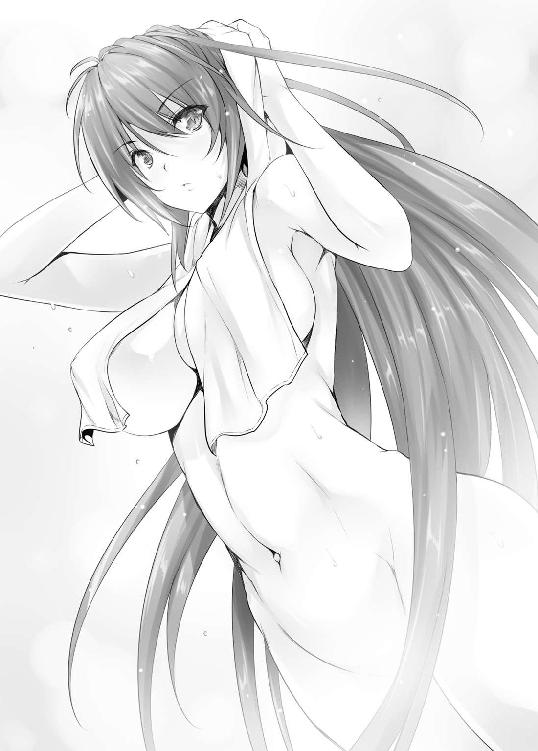

| 高１ですが異世界で城主はじめました (ＨＪ文庫) | |
| 鏡裕之 | |
| (2013) | |


序章 ヒュブリデの女の子
清川ヒロトは、馬上の快感に悶絶していた。
埃まみれのソルムの町を、栗毛の馬で歩いていく。異世界に来るのも初めてなら、異世界で乗馬するのも初めてだ。
もちろん、女の子と騎乗するのも――。
ビーズで結んだ二房の髪が、顔の左右で揺れていた。
目のぱっちりした童顔の女の子が、ヒロトの胴体に手を回している。シンプルな麻のベアトップに包まれたバストは、今にもはちきれそうなほどふくらんでいる。
その豊満な乳球が、ヒロトの背中に思い切り押しつけられていた。弾力たっぷり快感たっぷりの豊弾が、その張りとボリュームを誇示するかのように背中に密着し、変形している。
双つのふくらみは、馬の歩行に合わせて揺れていた。ヒロトの背中に密着しながら、揺れ動いている。上下動するたびに、パツンパツンの弾力がほとばしる。
心地よい衝動が、陶酔とともにヒロトの背中を駆け上がった。
思わず青空を見上げる。
ヒロトを試すかのように、甘美な豊球は背中で炸裂しつづけていた。ムチムチと乳球を歪ませながら、若さあふれる弾力を押しつけてくる。
（変な顔をしないようにしなきゃ......）
馬上の快感と闘いながら、ヒロトは思った。ヒュブリデ王国に来て、わずか四日後のことだった。
第一章 ディフェレンテ
１
しつこい暑さが、日本全土を覆っていた。限海市も、午前九時から三十度超えの猛暑だ。昼間になって、なお猛威を振るっている。
堂心円高校の校舎裏に建てられた二階建てのクラブハウスも、むっとした暑気に炙られて蜃気楼が立ちそうになっていた。生徒の姿が見当たらないのは夏休みだから、一階の一〇一号室が開いているのは、中世研究会の活動日だからだ。
三畳ほどのスペースに、味気のない灰色の事務机と四脚のパイプ椅子。手作りの品らしい甲冑に、細長い円錐形に尖った中世の帽子。
灰色のスチール棚にはホイジンガとフェルナン・ブローデルの著作など、中世関係の書物が並んでいる。
高尚な学術書の中にエルフの画集が紛れ込んでいるのは、きっと相一郎が持ってきたのだろう。巨乳と金髪は、相一郎の好物だ。さらに耳が大きく尖っていれば完璧である。
清川ヒロトは、一分前の十三時に部室に着いたところだった。学校指定の黒いズボンもワイシャツも、いやな汗で湿っている。ヒロトはスマートフォンを出してメールをチェックした。相一郎からの連絡はない。
首を濡れタオルで冷やしながら、ヒロトはハイポトニックウォーターを飲んだ。『七つの習慣』を広げる。世界で累計二千万部以上を売り上げた、ビジネス書のベストセラーである。世界で最も有名な自己啓発書の一つだ。
最後の章を読みはじめると、部室の外で物音がした。
「またその本か」
一八〇センチの長身に眼鏡――白衣の似合いそうな高校一年生が、汗びっしょりで立っていた。
相田相一郎――ヒロトと同じ一年Ｂ組だった。入学式では新入生を代表して式辞を読んだ。つまり、首席入学者ということだ。手には古本屋の薄い紙袋とビニール袋を持っている。
「社長にでもなるつもりか？」
相一郎は、ヒロトに侮蔑の視線を向けていた。
「人の上に立つのも面白いかなと思って」
「おまえが立てるものか」
吐き捨てて、相一郎は成績表を机の上に投げた。
一位の欄に、蛍光ペンが塗ってある。マーキングされていたのは、相一郎の名前だった。
「また一位だ」
自慢する。
「凄いな」
「おまえの名前はない」
わざと相一郎が強調する。
「三十位にも入れないやつは馬鹿だ。頭の悪いやつに、社長が務まるものか。一部上場企業で一番社長が多いのは慶応、次は東大、早稲田だ。おまえなんかに社長ができるか」
いつものように得意の毒舌をぶちかます。
「社長業と勉強は違うと思うけど」
「何が違うっていうんだ!?」
噛みつく相一郎に、
「短期間にたくさんの情報を正確にアウトプットするのが勉強だろ？ 社長は、これから会社をどうするか、社員たちをどう動かすか、考えることだと思うけど」
ヒロトは答えた。
「おまえはいつもそうやって人に反論する」
「だって、間違ったことを言ってるから」
「屁理屈言いめ」
やれやれとヒロトは思った。
言い負かされたと思うと、いつも相一郎は屁理屈を言うなと相手をなじる。小学生の時、妹と三人で遊んでいた頃から変わらない。きっと不満でもたまっているのだろう。ストレスが増えると、相一郎は決まってヒロトに毒舌をぶちまける。
相一郎は事務机の上に鞄を置いて、ヒロトと向かい合わせで腰を下ろした。ビニール袋から紙パックのリンゴジュースを二つ取り出し、一つをヒロトの前に置く。
すぐさまヒロトと相一郎はジュースを飲んだ。野郎二人のクラブハウスは、どこかむさ苦しい。
「相一郎は社長にならないの？」
ヒロトが尋ねると、
「おれは大学教授の方がいい。サラリーマンなんて、真っ平御免だ」
「でも、大学って凄い閉鎖的だっていうよ。教授と准教授と助教と院生だけのせいぜい十人単位の狭い人間関係だっていうし、准教授になるまではなかなかお金も稼げないみたいだし。他の大学の講師で糊口をしのぐみたいだけど」
「今会社に入ったっていつリストラされるかわからないし、業績悪化したら、営業に回されるだろ」
「大学の講師も一年契約が多くて、どこかに准教授として腰を落ち着けるの、難しいみたいだけど」
「人の夢を砕くな」
「普通に会社に入って、海外事業部とか行けばいいのに」
「いやだね。今の海外事業部は中国とかインドだろ？ おれはヨーロッパがいい。だから、中世研究会に入ったわけだし。もっとも、中世の時はヨーロッパは後進国だったがな」
相一郎が得意そうに唇の端を曲げた。
「衛生システムも最悪だったし、当時中国やイスラムが持っていた洗練された官僚制度も常備軍もなかったからな。ヨーロッパが常備軍と官僚制度を整備できるのは、絶対王政のあたりから。それまでは常備軍はなくて、戦争のたびに傭兵を集めていた。国民軍ができたのは、ナポレオンからだ」
どうだ、知らないだろうとばかりにヒロトを見る。
「それで金髪姉ちゃんが好きなわけ？」
「やかましい」
相一郎は、古本屋の名前の入った紙袋を机の上に置いた。
「それ、金髪姉ちゃんのＤＶＤ？」
「馬鹿言え」
「エルフの画集？」
答えず、相一郎は透明のビニール袋を引っ張り出した。
中身は、古臭い紙切れだった。
ずいぶんと黄色い。その上に、地図が描いてある。
「何、これ？」
「わからんのか、おまえは」
相一郎が馬鹿にしきった声を出す。
「羊皮紙だ」
「羊皮紙？」
「開口堂って古本屋で売ってた。もしかすると、本物かもしれない」
本物の中世ヨーロッパの地図だと言いたいらしい。
相一郎はビニール袋から羊皮紙を取り出した。灰色のデスクの上に広げる。それから、指先で地図をなぞった。
「ここを見ろ。中世の書体でＥＬＦと書いてある」
「偽物じゃない？ なんで単数形なの？ 普通、複数形でＥＬＶＥＳって書かない？」
「ここにはＨＹＢＲＩＤＥってある」
「ハイブリッド？」
「ヒュブリデ！ ドイツ語だ」
「やっぱり偽物じゃん」
ヒロトが突っ込んだその直後だった。
風も吹いていないのに、部室のドアがやけに大きな音を出して閉まった。つづいて、施錠の音が聞こえた。
二人は閉まった扉に顔を向けた。
妙な感覚だった。降霊術をやっていて、何かが降りた時のような感覚だった。
（誰かが閉めたのかな？）
確認しようと立ち上がりかけたヒロトを、相一郎のうわずった声が制していた。机が、突然化学反応を起こしたマグネシウムみたいに強く発光していたのだ。
「な、何だ、これ!?」
相一郎はパニックに陥りかけている。
「な、何？ 何か手品？」
ヒロトは羊皮紙を手に取って裏を眺めた。その瞬間、地図から発した光が二人を――部屋中を呑み込んでいた。辺りが、頭の中が、真っ白になった。
光に呑み込まれようとしているのに、眩しくなかった。目を開いたまま、視界が次々と白色に変化し――意識が消えていた。
２
突然、何かに叩きつけられるような感触に、ヒロトは意識を取り戻した。むっとした匂い――草の匂いか？
顔を起こすと、干し草だった。なぜこんなところに......と思う間もなく、豚の鳴き声が、つづいて牛の鳴き声が聞こえた。
（何だ何だ何だ......!?）
首を横に向けると、相一郎もうつ伏せに転がっている。腕で身体を起こして、ぺっと唾を吐いた。
「何だ、いったい......!?」
「九州あたりの牧場かな？ それとも、北海道？」
「テレポーテーションなんかあるか！」
相一郎の大声に、人の足音と金属音が重なった。音を立てて近づいてきたのは――二人の騎士だった。
（コスプレ!?）
一瞬、ヒロトは思った。
ＵＦＯに連れ去られたわけではないようだ。
きっと自分たちはどこかの牧場にテレポーテーションしたのに違いない。たまたまそこでコスプレをやっていて――それとも、中世のパーティ？
その割には、妙に殺気が漲っていた。
兜から覗く目が怖い。
（思い切り敵意？）
コスプレでは、こんな殺意は感じない。
よく見れば、兜の中の顔は日本人ではない。本物の白人の顔だ。
（まさか、外国にテレポート？）
思った途端、
「豚泥棒め！」
騎士が叫んだ。
「違います、豚泥棒じゃないです！」
二人いっしょに同じ言葉を発する。一人が剣を抜いた。抜いた時の音が、妙に生々しかった。
（え？ 剣!?）
ヒッと相一郎が声を上げた。
干し草から逃げようとしているが、腰が砕けている。
（まさか、その剣を振り下ろしたりしないよね？）
ヒロトは三人の騎士を見た。
やはり欧米人の顔だ。
でも、さっき日本語でしゃべっていたはずなのに、通じていたよなあとヒロトは思った。そんなことを考えている場合ではないのだろうが、なぜか緊迫感が来ない。やばい、死ぬ、おれだめかも、なんて焦燥も絶望も訪れてくれない。
「アイム・ナット・ユア・エネミー、アイマ・ジャパニーズ！」
必死に相一郎が叫んだ。
騎士が一旦止まった。
（効果あり？）
なかった。
騎士は、きっと厳しい目を向けて近づいてきたのだ。歩きながら、片腕で剣を払う。
相一郎が、ヒロトの後ろに隠れた。
騎士が剣を振り上げる。
（まさか、これ、死亡フラグ？ 全然死ぬ気がしないんだけど......）
でも、死ってやつは実感がないのだろうか？
ここで自分は死ぬ？
わけのわからない干し草の上で土になる？
騎士たちの姿がスローモーションで見えた。蹄の音が聞こえた。騎士が何か叫び、その後ろから、
「殺すな！ その者はディフェレンテだ!!」
飛び込んできた馬に乗っていたのは、骸骨だった。
第二章 骸骨の町
１
ソルムは、活気のない町だった。
商館らしい二階建ての建物はあるが、階段の端は石が崩れている。木製のドアも、半分壊れたままだ。
おまけに風が吹くと、すぐ埃が舞い上がる。
ヒロトと相一郎は、両手を縄で縛られたまま、ヒュブリデ王国辺境の町を歩いていた。サラブリア州でも端の端、数キロ先の村の向こうは、凶悪な種族の支配地である。
ヒロトたち二人の前後を、騎士が挟んでいた。先頭を行くのは、ヒロトたちを助けてくれた骸骨だ。
石畳の広場に集まっていたのは、女たちだけだった。井戸の前で行列をつくって、おしゃべりをしながら順番に水を汲み上げている。
「まだ直してねえのかよ」
ヒロトの前を歩いていた兵士が、商館を目にしてぼやいた。
「突貫工事で直すんだろうよ」
「どうせすぐとんぼ返りだ。城主も家令も、どうかしてる」
ヒロトは首をめぐらして広場を見た。
骸骨二人が、仲良さそうに話をしながら広場を突っ切っていく。包帯だらけの男四人が、小麦の入ったでかい袋を担いでいく。
（わっ!? 何だ、今の!? 怪我してるのか？）
それにしては包帯を巻きすぎだった。もう一度よく見ようとしたが、広場から通りに入って見えなくなっていた。
だんだん、異世界に飛ばされたという実感が追いついてきていた。言葉がわかるのは不思議だが、きっとそういうものなのだろう。
それにしても、あまり発展している感じの町じゃないな、とヒロトは思った。商館は、お世辞にも立派な建物とは言えない。広場も埃っぽい。
裕福な町ならこうはならない。きっとヒュブリデ王国の中でも、鄙びたところなのだろう。有力者に会って事情を説明して助けを求めるというのは無理そうだ。
ヒロトは井戸の女たちに目をやった。
年齢は三十過ぎ。
体形は......みんな、痩せている。太った女は一人もいない。
ヒロトは、アフリカでは太った人はお金持ちとされているという話を思い出した。一般の人は食事が充分摂れないため、痩せた人が多くなる。だが、お金持ちは充分すぎる栄養を摂取するため、太った人になるという。
女たちが、ヒロトたちの行列に目をやった。一瞥して、また話をつづける。ヒロトは痩せた女ばかりだったことよりも、彼女たちが無反応だったことに驚いた。
きっとこの世界の人たちにとって、骸骨が歩いているというのは当たり前の話なのだろう。
（おもしれえ）
ヒロトは少し興奮を覚えた。
まさに異文化体験だ。何を当たり前とするのかのベースが違うということほど、楽しい刺激はない。だが、相一郎は違ったようだ。
「屈辱だ......。こんなの、囚人だ」
相一郎がぼやいた。ぼやくだけでは感情を処理できず、
「おい！ 縄を解け！」
怒鳴った。
騎士が振り返った。
「できんな。逃げられると困るんでな」
「奴隷にするつもりか!?」
相一郎が騎士を睨みつける。
「おまえたちは兵士になるんだ」
「ぼくは高校生だぞ!?」
二人の騎士が立ち止まった。お互い、顔を見合わせる。
「何を言ってんだ？」
「ディフェレンテだからな。おれたちの知らない世界の言葉を言ってんだろうよ」
話し合う二人に、
「勝手にそっちで納得するな！ ディフェレンテってなんなんだよ！」
相一郎が叫んだ。
「どうした？」
骸骨が馬を寄せていた。ひぃぃっと相一郎が悲鳴を上げてすっ飛ぶ。
頭蓋骨の中は黒い空洞だった。眼窩には、ビー玉ぐらいの緑の光の玉が見える。
「こいつ、いやがってるみたいで」
騎士の答えに、
「誰だって異世界から無理矢理連れてこられればいやがる」
そう言って骸骨が顔を向けると、相一郎がびくっとふるえた。骸骨が馬の腹を軽く蹴った。馬が進み出し、ヒロトと相一郎はつづいた。
「くそ......なんでこんな目に......」
相一郎がぼやく。
ヒロトは顔を上げた。二階建ての建物の後ろから、尖塔が覗いていた。
二人の行く先、ソルム城だった。
２
無骨な城だった。
十メートルの城壁と濠が城を取り囲んでいるが、水はほとんどない。しばらく雨が降っていないようだ。そういえば、広場も埃っぽかった。きっと降雨量の少ない土地なのだろう。
城の敷地は四角形のようだった。角には、隅塔が建っている。そして、隅塔と隅塔の間には壁塔が建って、上から兵士が監視している。
跳ね橋の前には、骸骨が二人、立っていた。
「ひ、ひぃっ！ また骸骨！」
相一郎がヒロトにしがみついた。
ヒロトは微笑んだ。
怖がりなのは、小学生の頃から変わっていない。
「別に襲ったりしないよ」
「け、けど、あんな化け物――」
骸骨の兵士たちが背中を向けて歩き出し、ヒロトたちは跳ね橋を渡った。
渡ってすぐのところに畑があるが、土は乾いている。
（乾いているということは、最近雨が降っていないということだな）
とヒロトは思った。
（それとも、元々降水量が多くない土地なのかな。降水量があったら農業の収穫高もあるはずだし、それだけお金も入るわけだから、商館ももっといいつくりになってるはずだもんな）
町の鄙びたイメージは、きっと収穫高の低さによるのだろう。あまり降水量は豊かではないに違いない。
四角い大きな主塔のそばを通って裏側に回ると、長方形の居城と厩舎が見えた。骸骨が馬を止め、地面に降りた。
相一郎が顔を寄せた。
「兵士になるって、あんな化け物の下につくのか？」
囁く。
「夜の警備は肝試しだな」
「冗談を言ってる場合か」
骸骨が城に入り、後ろの騎士がヒロトたちを小突いた。
狭い入り口を抜ける。
城内は暗かった。小さな採光窓から、陽光が壁の一部を照射している。剥き出しの石の通路を抜けて階段を上がった。
通されたのは、大広間だった。五十畳ぐらいはある。獣の皮が床に敷かれている。カーペットはない。
タペストリーが掛けられ、その前に背もたれの長い椅子が置かれている。座っているのは、血色の悪い男だった。細長の長方形の顔に、矢印のような先の尖った鼻をしている。唇は薄い。
その隣には、太ったスキンヘッドが立っていた。横長のでかいツルツルの石に目鼻を書き入れたような顔だ。だぶだぶのガウンを着て紐でウエストを締めている。
（血色の悪い方が城主だな）
ヒロトは思った。
城主が立っているはずがない。座っているのが城主だろう。
スキンヘッドはその部下か。
血色の悪い男の隣には、ふっくらとした頬の女がいた。腰つきも尻も、豊満さが滲み出ている。
男の妻......だろうか？
それにしては年齢差がある。
（娼婦......？）
二人の男は、ひそひそ話をしていた。
「ルサ城の城主は、精霊教会附属学校を見学したおりに、エルフの子供に贈り物をして、エルフとのつながりができたそうでございます。四日後の視察には、是非――」
スキンヘッドが、ヒロトたちの知らない城の名前を口にする。
「そんなので本当に効果があるのか？」
「はい。それから、ずっとお話をしておりますエルフ優遇策の方でございますが――」
「しかし、一等地をというのは......」
骸骨が踵を合わせた。
連れて参りました、と報告する。デブのスキンヘッドはヒロトたちを見やり、
「カラベラ。ディフェレンテはどこだ」
「そこの二人です」
骸骨が答えた。
「こんな若造が？」
スキンヘッドが声を上げ、椅子の男が首を振った。
「少しは助けになるかと思えば、小枝のような若造か。無駄だったな、センテリオ」
「ウルカン様、もう一度召喚をいたします」
「司祭に金を払えというのか？ 来客は明日だぞ？」
椅子の男が眠そうに顔を向ける。
「では、モーラの砦に」
「戦力になるのか？」
「生贄と思えば――」
スキンヘッドの言葉に、相一郎がふるえた。
「ぼくを生贄にするつもりか!?」
スキンヘッドは煙たそうに顔を向けた。
「おまえたちは兵士として採用してやる」
「勝手に兵士にするな！ 元の世界に返せ！」
相一郎の叫びに、スキンヘッドが騎士へ向かって顎を突き出した。騎士が相一郎に近づき、いきなり腹に拳をぶち込んだ。
相一郎はうずくまった。
膝を突いて、げえげえと唾液を吐く。
ヒロトはむっとした。
居丈高に叫んだ相一郎も悪いが、殴らせる方がもっと悪い。一言言ってやろうかと思ったところで、
「城主のウルカン様に、家令のセンテリオ様だ。口の利き方に気をつけろ」
命じて、騎士は下がった。
ヒロトの読み通りだった。椅子の男が城主で、スキンヘッドは家令――つまり、城主に代わって城の雑務を取り仕切る、ナンバーツーだ。
相一郎がよろよろと立ち上がった。
「くそ......暴力をふるいやがって......」
聞こえないように小声でぼやく。
沈黙は金、雄弁は銀。
でも、言うべき時もある。きっと向こうはヒロトたちを舐めているに違いない。
ヒロトは城主と家令に顔を向けた。
「相一郎を殴っても、得はないと思うけど」
「おまえも殴ってほしいのか？」
センテリオが睨む。
「わざわざ異世界から召喚したってことは、助っ人として呼んだってことでしょ？ 助っ人を殴っても、協力関係は得られない」
「どっちが上のつもりだ？」
「今はそっちが上。でも、将来、こっちが上になる」
ヒロトは屈託のない笑みを浮かべた。センテリオの口が開き、顎がだらしなく垂れ下がった。
呆れたらしい。
だが、それこそが狙いだ。ヒロトは真顔に戻り、
「おれたちを呼んだ目的は何？」
ストレートに切り込んだ。
相手の表情を見る。
「おまえたちには、遠くに行ってもらう」
「それって冥途じゃないよね」
「あの世には近いかもしれぬな」
センテリオがいやらしい微笑を浮かべた。
（裏がある？）
たぶん、とヒロトは自分で答えた。召喚した相手に暴力を振るわせるような男だ。きっと、ろくでもない任務を命じるに違いない。
「おまえたちにはヴァンパイアを撃退してもらう」
相一郎が、ヒロトの隣で凍結した。
ろくでもなかったのは予想通りだが、吸血鬼は予想外だ。
「ヴァンパイアって、吸血鬼？」
ヒロトは確認した。
「この辺りにはよくヴァンパイア族が出るのでな。このところ、モーラ村で立て続けに村人が生き血を吸われて死んでおる」
「い、生贄って、そういうことか......！」
相一郎がふるえている。センテリオは、どうだ、びびったかと言わんばかりに目を見開いている。
ヒロトはぽりぽりと頭を掻いた。
「倒したら、ご褒美はもらえるの？」
「何!?」
センテリオの声が一オクターブ跳ね上がった。
「当然危険な任務を果たすわけだし、そのためにわざわざ異世界から召喚されたわけだし、それ相応の見返りは欲しいんだけど」
「生意気なやつめ」
センテリオはヒロトを睨んだ。ヒロトは微笑んだ。
「元の世界に戻してくれる？」
「いずれ戻してやる」
「いずれっていつ？」
曖昧に誤魔化そうとするところを追いかける。
「倒したら、大司教に紹介してやる」
「今、紹介状を書いて。任務に失敗したら破り捨てればいい。成功したら、すぐ渡して」
「倒したらだ」
「じゃあ、倒したら城で勤務させるって条件も付け加えて」
「何？」
「倒したはいいけど、砦に放置されたんじゃ、元の世界に戻れない」
「わしが信用できぬというのか？」
「知らない人を信用する人間の方が、信用できないと思うけど」
二人は睨み合った。
センテリオは、城主に顔を向けた。
「いかがいたしましょう」
「書いてやれ」
「城の勤務の方は――」
「それも付けてやれ」
センテリオは面倒そうにヒロトに目をやった。
「名前は」
３
二人のディフェレンテと守備隊の兵士が出ていくと、センテリオは城主ウルカンに顔を向けた。
「よろしいのですか？」
「どうせ死ぬ身だ」
「もう少しましな助っ人が来てくれるとよかったのですが......」
「目論見通りにはいかぬな」
センテリオは息をついた。
ヴァンパイア族を何とかしてくれという請願は、何度も村の連中から受けていた。正直、うるさくて敵わない。
しかし、城には兵士を派遣する余裕はない。少しでも足しになればよいとディフェレンテを召喚したのだが――。
「一人は骨がありそうだな」
「あの生意気なやつでございますか？」
センテリオは問い直した。
「生きて帰ってくれば面白いことになる」
「無理でございましょう」
「無理であろうな」
ウルカンも、本気で生きて帰ってくるとは思っていないようだ。
正直、一対一では人間はヴァンパイア族に敵わない。敵は空を飛べるのだ。追いかけても簡単に逃げられてしまう。弓矢で射ても、躱されてしまう。
れっきとした兵士でもそうなのだ。ディフェレンテ――異世界の人間となれば、なおさらだ。こちらの世界の者と違って、剣を握ったこともあるまい。ヴァンパイア族に立ち向かっても、生贄になるだけだ。
「明日の準備はどうなっておる？」
ウルカンが尋ねた。
「もちろん、食事の用意も――」
「この町が発展するかどうかは明日に懸かっておる。なんとしても、この町にエルフを呼んでもらわねば――」
第三章 ミイラの村
１
幅三十センチほどの石の壁が、数十メートルにわたって痩せた土地を突っ切っていた。高さは一メートル程度。
その壁に身を乗り出して弓矢をいじっているのは、兵士である。モーラの砦に派遣された、不運な男だ。後ろの小屋には隊長がいるが、大方居眠りでもしているのだろう。
ディフェレンテが早く来るといいが、と兵士は思った。
二人だけでヴァンパイアに歯向かうのは、正直厳しい。連中はいつも一人で空からやってくるが、二人でも善戦は難しい。ヴァンパイアが襲撃するのは、夜なのだ。そして、人間は夜に弱く、空を飛べない。
兵士は矢を番えた。
曇天に向けると、ぽつりと雨が降り出した。
（くそ、雨かよ）
左の方向に矢を向けた兵士は、わっと飛びのいた。巨大な黒い翼が宙に浮いていたのだ。床も何もないのに空中に身体を横たえて、楽しそうに男を見ている。
「ヴァ、ヴァ、ヴァンパイア～～ッ！」
兵士は慌てて弓を引いた。
女ヴァンパイアがくるりと反転する。
速い。
次の矢を番えた時には、兵士の顔のすぐそばにヴァンパイアが来ていた。熱い息が頬に掛かった。
「おまえ、今夜の獲物だよ」
告げてケタケタと笑って空に舞い上がった。
（ふ、ふざけやがって!!）
戦慄しながら、二本、三本とつづけて矢を放った。だが、すでにヴァンパイアは高く曇天の中に舞い上がり、射程から外れていた。
２
雨雲が空を覆っていた。
緩やかな丘陵が、雨の中にけぶっている。道はひどいぬかるみだ。モーラの村まであと丘陵一つというところで、いきなり降り出したのだ。
ヒロトと相一郎は、案内役の騎士につづいて大木の下に走り込んだ。
「傘はないのか？」
相一郎の問いに、
「王様気分かよ。贅沢を言うな」
騎士は冷たく返した。
内心は、どうしてこんな連中を村まで案内しなきゃいけないんだ、と思っているに違いない。
ヒロトは空を見上げた。一面の灰色に、視線が吸い込まれそうになる。
「最悪だ」
相一郎が不平をこぼした。
ソルムの町から、ずっと歩いてきたのだ。馬に乗れるのは、騎士と家令と城主だけらしい。
おかげで、ヒュブリデ王国のことはよくわかった。
五十年ほど前までは、この国は人間とエルフだけの国だった。だが、疫病でヒュブリデ王国の人口は激減した。町によっては人口の半分が失われるようなところもあったらしい。あまりの人口減少に、町自体が運営できなくなるところが激増した。
きっとペストに襲われたヨーロッパの町と同じだったのだろう。葬式をしようにも、肝心の司祭がいない。鍛冶屋に道具の修理を頼もうにも、鍛冶屋は死んでいる。町を守るために兵士を雇おうにも、そもそも兵士になれる男がいない。町から町へものを運ぼうにも、運んでくれる人がいない。人口減少は、当然だと思っていた町の機能を停止させたのである。
人間だけでは、とても地域を運営するのが困難な状況に達していた。その時に、あるディフェレンテが召喚されて、イブリド制という異種族採用システムを導入し、骸骨族などの異種族を町に導き入れて難局を乗り越えた。異種族が人間の町に住み着くようになったことで町の人口が増え、町が成り立つようになったのだ。
以来、王国の住人たちで解決できない問題があると、精霊教会の司祭や司教がディフェレンテを召喚するようになったという。
ディフェレンテ――平たくいえば、異世界の助っ人だ。
ただ、最近は面倒を押しつけるために呼ばれることの方が多くなっているらしい。それに伴って、頼りないディフェレンテもたくさん来るようになったという。おかげでディフェレンテの評判はがた落ちだそうだ。
「おれもディフェレンテに会うのは初めてだが、たいしたことなさそうだな。見るからに役に立たなさそうだもんな」
騎士は二人を見て笑った。
「まあ、せいぜいしっかりやんな。ヴァンパイア族は血を吸うだけだ。ショック死しなきゃ、生きられるさ」
「助かった人もいるの？」
ヒロトが尋ねると、
「この間も一人、モーラ村のやつが襲われたよ」
言って、少し前のことを話し出した。
３
三日前のことだった――。
男は、夜道を急ぎ足で歩いていた。
金が掛かるので、松明は買わなかった。日没には間に合うだろうと思っていたのだ。だが、途中で立ち寄った村の居酒屋がいけなかった。
一杯のつもりが、予想外の美味さに二杯三杯とお代わりをつづけ、へべれけになってしまったのだ。
酔いを醒まして出掛けたが、予定より大遅刻だった。
最近、あれが出たという話は聞いていない。しかし、夜はやつらの時間だ。やつらに出くわさなくても、追剥だっている。
（あともう半時間も歩けば、着くはずだ）
男は急いで丘陵を上った。なだらかな丘の頂上に差しかかる。
月光が、下り坂を照らしていた。
明るく浮かび上がっているのが畑、黒く沈んでいるのが道だ。畑の中に、数メートルの間隔で木が点在している。その木をつないでいくと、道になる。
（あともう少しだ）
下りはじめたところで、畑の上を黒い影が走るのが見えた。
（コウモリ？）
男は冷や汗を覚えた。
コウモリにしては、ずいぶんとでかいやつだった。
（まさか、やつら......）
寒気が首筋からぞわぞわと広がる。
（ひぃぃっ......）
男はびびりながら坂道を下った。妙な空気の音が鳴った。だが、正体を問うまでに、男は道になぎ倒されていた。
どうと顔面を地面にぶつける。
「久しぶりの獲物だねえ」
聞こえたのは、女の声だった。
男の首筋に、女の息が掛かった。
悲鳴は上げられなかった。その前に、女が首筋にかぶりついていたのだ。
男は目を剥き、痙攣した。
女の喉が鳴る。
歪んだ唇から唾液がこぼれ、男の目が暗い宙を向いた。ひぃ、ひぃとかすれた息がもれる。
吸血鬼の女が顔を上げた。
男は目をひん剥いたまま、土の上に倒れて動かなくなった。
「おやおや。吸われたショックで死んじまったかい。もったいないねえ。生きてれば、また襲ってやったものを」
微笑んだ唇から、血のついた牙が覗く。立ち上がった女の背中から、鉤爪のついた黒い翼が広がった。
４
「モーラまで、あと半時間ほどだったそうだ」
そう締めくくった騎士に、ヒロトは尋ねた。
「その人、死んでなかったの？」
「死にかけたがな。たまたま用事で村から来た司祭が見つけて、息を吹き返したそうだ。けど、一週間前に一人死んでる。その十日前にも、二人死んでる」
「みんな血を吸われたの？」
騎士はうなずいた。
「連中、殺気立ってるぞ。おまえたちも気をつけた方がいいぞ。ま、気をつける前にあの世行きだろうがな」
ザーッと雨の音が強まり、カーテンのようになった。それから、また雨足が緩む。
当分、雨は止みそうにない。
ヴァンパイアか、とヒロトは思った。
いったいどうやって捕まえるのだろう。人ぐらいの大きさのものが飛ぶって、どんな感じなのだろう。
空からの攻撃となるとやばいな。どうやって防ごう。どうやって戦おう？
知恵と勇気と友情？
それ、絶対無理。
ふいに、水たまりを弾く音が聞こえた。
白い人影が、雨の中を近づいてくる。
相一郎がびくっとふるえたのは、ヴァンパイア族かと思ったのだろう。
（吸血鬼じゃないな）
ヒロトは思った。
ヴァンパイアがわざわざ雨の中を走ってくるとは思えない。それに、三日前に現れたヴァンパイアは、黒い翼だったはずだ。
（村人が雨宿りに来たのかな）
向かってくる姿を見て、ヒロトははっとした。飛び込んできたのは、汚い包帯に身を包んだ塊だったのだ。
ヒロトと相一郎は、一瞬、目が点になった。
（砂漠の民？）
最初に頭に思い浮かんだのは、ベドウィンの民だった。砂漠に生きるアラブ系遊牧民みたいにターバンを巻いている......と勘違いした。
だが、砂漠の民ではなかった。
墓場で発見されるミイラよろしく、黄色っぽく汚れた包帯がびっしりと全身に巻きつけられている。ご丁寧に指先にまで包帯が巻かれている。露わになっているのは、目元だけである。
「ひぃぃっ！ ミイラ！」
相一郎がヒロトの背後に隠れた。
ミイラは悲しそうにヒロトたちを見た。
ヒロトは頭から爪先まで、ミイラを見下ろした。爪先から再び視線を上げ、ぴたりとバストで止めた。
包帯が覆う胸は、見事に突出していた。グレープフルーツ半分どころの大きさではない。汚らしい包帯に隠されているが、そこだけ激しい造山運動を行ったかのように、急峻なカーブを描いて豊大に迫り出している。
（女の子......）
相手は、女性のミイラだったのだ。
ミイラ娘は、太腿を合わせてもじもじしていた。場違いなところに場違いな姿で出てしまったという様子だ。
「あっちへ行け」
騎士が言い、ミイラ娘は頭を下げて背を向けた。また、強い雨の中へ駆け出そうとする。
（こんな雨の中に、女の子を追い出すのか......!?）
咄嗟にヒロトは呼び止めていた。
「行かなくていいよ。雨宿りしていきなよ」
ミイラ娘は、立ち止まった。
背中を見せたまま、驚いて首だけ向ける。
「おいで」
ヒロトはミイラ娘の手をつかんだ。包帯はしっとりと濡れていた。ずっと濡れながら駆けてきたに違いない。
「おい」
騎士が不快な表情を向ける。
「騎士なんだから、騎士道精神を発揮してよ♪」
ヒロトはウインクしてみせた。
「騎士道精神は化け物には行わぬ」
「緊急時には、ライオンだって他の動物といっしょに洞窟に避難したりするんだよ。おれの砦の着任祝いに許してあげてよ」
屈託のない笑みを浮かべると、騎士はぶつぶつ言いながら背中を向けた。
折れてくれたのだ。
「大丈夫だよ。いっしょに雨宿りしよう」
ヒロトはミイラ娘を引っ張った。木の下に入ったところで、さらに雨足が強まった。しばらく止みそうにない。
呼び止めてよかったとヒロトは思った。止めていなければ、ちょうど土砂降りの雨に打たれていたところだ。
「あの......ありがとうございます......」
ミイラ娘は丁寧に頭を下げた。
「この近くに住んでるの？」
「ずっと向こうの洞窟......」
たどたどしい様子で、ミイラ娘が答える。
なんだか、かわいい。
ヒロトは、再び間近でミイラ族の娘を見た。やっぱり、包帯が大きく胸のあたりで隆起している。
（人間の女の子だったら、結構モテモテかも）
ヒロトは思った。
包帯の隙間から見える瞳も、よく見ると碧眼だ。包帯を外したら、きっとかわいい顔をしているに違いない。
（本当は美人かな）
たぶん、そうだろう。
こんなかわいい子が、モーラ村の近くに住んでいるのだ。
（そうだ）
ヒロトは思いついた。
モーラのことについて、ヒロトは何も知らない。地元のことは、地元に聞けだ。せっかくだから、この子に聞いてみよう。
「おれたち、ディフェレンテなんだ。モーラの砦に行くところなんだ」
「ディフェレンテ？」
「異世界から来たばかりなんだ。だから、色々教えてほしいんだ。ヴァンパイア族のこと、何か知ってる？」
ミイラ娘は黙った。
（怖いのかな？）
沈黙のサインは読みづらい。
「ヴァンパイア族って、夜しか出てこないの？」
「ミイラ族がやったんじゃありません」
小さな声でミイラ娘は答えた。妙に自己防衛的な返事だった。
「襲ったのはヴァンパイア族でしょ？」
「ミイラ族とは関係ありません」
うつむいて答える。
再び防衛的な答えだった。
（何から防衛しようとしてるんだろ？）
一瞬考えて、ヒロトは気づいた。何から防衛しているのかではない。何を防衛しようとしているかだ。
何を――。
すなわち、自分の種族を――。
「もしかして、ヴァンパイア族のことで悪い噂を立てられてる？」
ミイラ娘は答えなかった。
答えないのは、それが真実だからに違いない。
「立ててるのは人間？」
ミイラ娘は答えない。
沈黙は雄弁なり。正解なのに答えないのは、すぐ近くに人間の騎士がいるからに違いない。彼を気にしているのだ。
これ以上尋ねても、ミイラ族の娘を困らせるだけだ。
ヒロトは話題を変えた。
「今日は何かのお遣い？」
ミイラ娘はうなずいた。
「お酒？」
縦に首を振る。
「祝い事でもあったの？」
「結婚式......」
誰かが結婚するらしい。それで隣の村まで酒を買いに出掛けたのだろう。
「ここって、よく雨が降るの？」
ミイラ娘は首を振った。
「最近、雨が降らないから」
「じゃあ、おれたちツイてるかも」
ミイラ娘は不思議そうにヒロトを見た。
「滅多にないことが起きたってことは、いいことが起きる前兆だよ。新婚さんにおめでとうって伝えて」
ミイラ娘の表情が輝いた。
大きく縦に首を振る。
よかった。ヴァンパイア族の話をしたので場が沈んでしまったが、明るくなってくれた。ミイラ娘が明るくなると、ヒロトもうれしくなる。
もっと輝いた表情を見たくなって、
「その包帯、似合うね」
褒めると、ミイラ娘が恥ずかしそうにうつむいた。
照れている。
かわいい。
「人間が着けても似合うかな？」
ミイラ娘は、不思議そうにヒロトを見た。
なぜ、不思議な表情を浮かべているのだろう。人間だって、怪我をすれば包帯を巻く。
「人間が着けちゃだめなものなの？」
ミイラ娘は首を振った。
「でも、ミイラ族じゃないと、うまく巻けないから......」
ターバンを巻く文化のない日本人にはうまくターバンを巻けないというのと同じことだろうか？ それで、不思議そうな表情をした？
何だか、違う気がする。
ふいに雨の音が弱まっていた。大粒の雨が小粒に変わり、雨が描く線が細く小さくなってゆく。
やがて、ほとんど線は見えなくなった。
「行くぞ」
騎士が馬に飛び乗った。
せっかくミイラ族と知り合ったのに、楽しい時間は終わってしまった。
馬が歩き出した。
ヒロトも出発しなければならない。
「行くぞ」
相一郎は先に歩き出している。
ヒロトは残念な気持ちになった。この世界の住人と普通に会話をしたのは、彼女が初めてなのだ。
もう少し話したかった。
気の利いた台詞を考えて、咄嗟に、
「またね。今度、包帯巻いてね」
ヒロトは手を振ってぬかるみの道を歩き出した。真ん中の泥だらけの部分を避けて、脇の草の上を歩いていく。
振り返ると、ミイラ娘はじっとヒロトを見ていた。
「どういう神経だ？」
相一郎が速度を緩めて下がってきた。
「何が？」
「相手はミイラだぞ？」
「でも、目がかわいかった。ついでに巨乳だった♪」
相一郎が首を振る。
「胸がでかけりゃ何でもいいのかよ」
「そんなことはない」
「嘘つけ」
「あの子、絶対かわいい子だと思うよ」
「何がかわいいだ。包帯の下は腐ってるに決まってる」
「そうかな。露出してる部分は全然平気だったけど。ミイラ族って、巨乳が多いのかな？」
「付き合いきれん」
相一郎は首を振った。
５
白い壁が、高さ四メートルの小さな教会の天井を覆っていた。雨雲のせいで、採光窓からの明かりは暗い。
ベンチのような座椅子が左右に分かれて八列。その先に、先端が三叉になった木が据えられている。三叉の中心で輝いているのは、ゴルフボール大ほどの光の玉だった。
ヒロトたちは、モーラ村の住人とともに、精霊教会で祈りを捧げていた。ヒロトたちを連れてきた騎士は、とうに去っている。
村人たちは、しきりに精霊様の名前を口にしていた。
「どうかヴァンパイア族から我らをお救いくださいまし」
「精霊様......どうかお助けを......ヴァンパイア族とミイラ族に天罰を......」
光は、蛍の光のように明滅をくり返している。光が消えそうになると、村人が声を上げ、さらに祈った。
司祭が何やら呪文らしき言葉を唱え、住人たちの方を向いた。
「今日はディフェレンテの方が砦に見えた。皆で歓迎してやらねばなるまい」
村人の冷めた目が、ヒロトたちを見る。
アウェイの雰囲気である。
「精霊様もどうかなさってる。ヴァンパイア退治に、こんな小枝を寄越すなんて......」
「精霊様も調子が悪かったのだろう」
村人たちは小言をこぼしはじめた。
「呪いかもしれんぞ。我らにもっと悔い改めよと申されているのかもしれぬ」
「何が悔い改めよか。それは城の連中だろう。取るものだけ取って、ろくな兵は寄越さねえ。わしらがヴァンパイア族に殺されるのを見て楽しんどるんだ」
「ミイラ族のせいに決まっとる。あいつらが、村の近くにいるから――」
「あの汚ねえ連中が来てから、ろくなことがねえ」
「もっと遠くに行ってもらうか」
ヒロトと相一郎は顔を見合わせた。
ミイラ族はあまりよく思われていないようである。だから、あのミイラ娘はミイラ族のせいじゃありませんとくり返したのだ。
「しかし、宴は――」
司祭が、困った笑みを浮かべながらなだめようとする。
「宴はおれたちがヴァンパイア族を退治した後にやってください。おれたちは、すぐ砦に向かいますので」
ヒロトが言うと、
「行ったところで足しになるか」
村人が吐き捨てる。
「行けば貴重な食料を使って宴をする必要はなくなる」
ヒロトの反論に、村人は黙った。司祭が退出を促すと、何か言いたそうな顔を向けながら、精霊教会を出ていった。
「申し訳ない......これで四人目でしてな。連中も気が立っとるのです」
司祭が頭を下げた。
「あの光は何ですか？」
ヒロトは尋ねた。
「精霊の灯です」
「精霊の灯？」
「精霊様はこの世の力です。大きな町では、もっと大きな精霊様がいらっしゃると聞きます。夜も、昼のように明るいとか」
「精霊って、電気じゃないのか？」
相一郎が突っ込む。
「精霊様はこの国を流れる聖なる力です。精霊様は我々に水を与えてくださる。井戸から水が湧き出るのは、すべて精霊様のおかげです」
説明をつづける司祭に、
「光が消えることはないんですか？」
「......あります」
少し言い淀んで、司祭は答えた。
「上に立つ者がこの世界にとってよくないことをすれば、精霊様はお怒りになって姿をお隠しになります」
「隠す？」
「つまり、精霊の灯が消えるということです。ソルムではまだありませんが、他の町では何度もそういうことがありました」
ヒロトは精霊の灯を見た。
「ヴァンパイア族の襲撃と関係は？」
「ありません。襲撃の前も後も、精霊の灯に変わりはありません。村の者は、ミイラ族がやったに違いないと言っておりますが」
「でも、ミイラ族の娘は無関係だと言ってたよ」
「わたしもそう思います」
「じゃあ、どうして村人は――」
司祭は息をついた。
「ヴァンパイア族は、ミイラ族を襲わないのです。だから、ミイラ族と結託しているに違いないと、村の者は思い込んでいるのです」
６
痩せた岩山の中に、裂け目が走っていた。その裂け目から、オレンジ色の灯がこぼれている。
ミイラ族の洞窟だった。
奥にはミイラ族の男女、三十名ほどが住んでいる。
皆、同じような包帯を巻いていた。目と口が出ているだけである。それでも、男女の区別はすぐにつく。
胸元が豊かに隆起しているのが、女のミイラ族である。
ちょうど結婚式の終わったところだった。新郎新婦の姿はない。近くの別の洞窟に移ったのだ。
ミミアは、昼間に出会ったディフェレンテのことを話したところだった。
「それ、作り話だろ？」
年上の女たちが笑いながら冷やかす。
ミイラ族は、人間に煙たがられている。やれ汚いだの、近寄るなだの、侮蔑の言葉ばかり投げつけられている。
親切にされることは皆無だ。
「包帯を巻いてくれなんていう人間なんか、知らないね。雨で凍えて、幻覚でも見たんじゃないかい？」
ミミアは首を振った。
あの人は幻覚ではなかった。
若いディフェレンテは、自分の手を握って、木の下に引き入れてくれたのだ。あの手のぬくもりは、錯覚ではない。
思いがけぬ親切だった。
騎士は自分に出ていけと言ったのだ。
よくあることだ。ミイラ族などといっしょに雨宿りしたくなかったのだろう。でも、雨の中へ戻りかけた自分を、あの人は引き止めてくれた。騎士と交渉して、自分を雨宿りさせてくれたのだ。
ずっと雨の中を走ってきてずぶ濡れだったから、本当にうれしかった。あの辺りで雨宿りできる場所は、あそこしかなかったから......。
おまけに自分のことを気づかって、色々と話しかけてくれた。包帯のことも褒めてくれた。恥ずかしかったけど、うれしかった。人間は自分たちの包帯を汚いと思っている方が多いから......。
ミミアはディフェレンテの姿を思い描いた。
優しい瞳に、優しい顔。
目元がきりっとしていた。学問をしていない人間の顔ではなかった。向こうの世界では何をしていたのだろう？
王族？
わからない。ヒュブリデ王国の王族は、多くがエルフだ。精霊教会の要職は人間が占めているけれど......。
あの人は、もうモーラの村に着いただろうか、とミミアは思った。今頃宴の真っ最中だろうか？
でも、最近、村の人は気が立っているから――特にソルム城から来る人に対して反感を持っているから、あまり歓迎を受けていないかもしれない。自分に親切を施したことで悪く言われていなければいいけど......。
「包帯を巻いてくれなんて、悪い冗談を言うディフェレンテだね」
年上のミイラ女が言った。
「そんな人じゃ、ない」
小さな声で反論する。
「悪い冗談だよ。本気で言うものかい」
「そうだよ。みんな汚いって言って、包帯なんか着けたがらないんだから。まあ、連中はわたしたちの包帯が一番ってことを知らないからね。丈夫だし、怪我もしないし、疫病にだって罹らない」
「まあ、人間はわたしたちのことを虫けらみたいに思ってるから仕方ないさ。中途半端な連中は、自分より下の者を見つけ出して馬鹿にするもんだよ」
ミミアは黙った。
あの人は、優しい人だ。自分をからかうはずがない。ディフェレンテは違う世界の人だから、きっとこの世界の人間と違うものの見方をしているだけなのだ。
「村まで様子を見てくるかい？」
一人が悪戯半分に提案した。
「正気かい？ 村の連中は、わたしたちがヴァンパイア族の仲間だって思ってるんだよ」
「ちょっと行って帰ってくるだけさ。何ともないよ」
「見つかったら、殺されるよ。わたしは行かないよ」
一人の声に、他のミイラ族の女も賛同した。やがて、女たちは散開した。
ミミアは一人になった。
灯も消えた。ミミアは地べたに草を敷きつめてつくったベッドに横たわった。
が――眠気は襲ってこない。
仲間はもう眠っているようだ。
あの人も眠っただろうか、とミミアは思った。夜の番でもさせられているのだろうか？ 喉が渇いているかも......。
ふいに、ミミアは立ち上がった。
ミミアは陶器のコップに、酒樽を傾けてみた。
少し出た。
包帯もいっしょに持って、洞窟を抜ける。そのまま、林に出た。星が満天に輝いていた。
ミミアは、夜の中を急ぎ足で歩きはじめた。
７
砦というのは名ばかりで、見張り小屋のようなものだった。
石壁が数十メートルにわたってつづいており、その真ん中に見張り小屋が位置している。それがモーラの砦だ。
ちょっとした矢を避けるのには役立ちそうだが、本格的な戦闘となると、簡単に破られそうな防壁だった。小屋のそばには、小さな石ころが散らばっている。
砦を仕切るのは、ルケという中年男だった。
「おまえたちはよく見張ってろ。おれたちは寝てるからな」
そう言うと、グルナというもう一人の兵とともにベッドに潜ってしまった。
ヒロトと相一郎は外に出た。
濃紺の夜空一面に、もの凄い数の星が輝いていた。夜空が、星であふれている。ヒロトたちは一瞬、星の多さに見とれた。それから、
「さすがに目立つかな？」
お互いのワイシャツを見合った。
「いい的だな」
答えたのは相一郎である。
二人は動物の皮でできた粗末なコートを羽織った。見張りといっても、何もすることはない。
不思議な感覚だった。昼間には堂心円高校のクラブハウスで、暑さにうだりながら相一郎と話をしていたのに、いつの間にか異世界にいる。そして、夜の見張りをさせられている。
なんだか、おかしい。そして、面白い。
小学生で初めてタイに旅行した時も、こんな感じだった。六時間ほど飛行機に乗ったら、日本とは違う世界が待っていた。看板などの表記は見慣れないタイ文字、話される言葉もタイの言葉。気温も民族もまるで違う。
戸惑いと興奮を覚えた。
（でも、タイ旅行の時以上の衝撃かも）
町を歩く骸骨の兵士。そして、包帯だらけのミイラ族――。
あのミイラ娘は、もう帰り着いただろうか。
包帯はもう乾いただろうか。
初めて見た時、相一郎が悲鳴を上げてミイラ娘が悲しそうな顔をしたのが、かわいそうだった。その後に胸が大きいことに気づいたのだが――。
（モーラにいる間に、もう一度くらいは会えるのかな）
遠くで不気味な獣の声が聞こえて、二人は水平線の方角に顔を向けた。
「何だ？」
相一郎が怯える。
「飛行機じゃない？」
「そんなもの、あるか！」
相一郎が噛みつく。
ヒロトは微笑んだ。
リラックスさせようとぼけたのに対して、ちゃんと引っ掛かってくれた。
「大変なところに来ちゃったな」
「おまえのせいだ。おまえがあんな取引をするから――」
相一郎がまた噛みつく。
「でも、任務をやり遂げたら、大司教に会わせてもらえるよ」
「成功するものか。どうやってヴァンパイアを捕まえるつもりだ？」
「捕まってくださいってお願いしてみようか？」
「話にならん」
相一郎は首を振った。
それから、二人は無言になった。ヒロトは再び夜空を見上げた。隣でスマートフォンをいじる音が聞こえる。
「やっぱりつながらない......」
相一郎が絶望的な声を上げる。
「くそ......なんでこんなことに......」
頭を抱えてぼやいた。
悔しくて仕方がないのだろう。責任も感じているに違いない。だから、ヒロトにも当たったのだ。
相一郎が買ってきた羊皮紙に触れたことで、異世界に来てしまった。すべての原因をつくってしまったのは自分だと、相一郎は思っているに違いない。
あの羊皮紙は、異世界への扉だったのだろうか？ ディフェレンテを召喚するためのツールだったのだろうか？
恐らくそうだったのだろう。あの地図にはＨＹＢＲＩＤＥ――ヒュブリデと書いてあった。きっと、この国の地図が記されていたのだ。
結果、二人は、元の世界とは違う別世界にいる。そして、戻る術がない。けれども、ヒロトは絶望を感じていなかった。
逆に、頭の隅っこがこうささやくのだ。
これはチャンスだぜ。楽しい冒険的体験の始まりだぜ。タイだってアイスランドだって、異世界だ。けど、これ以上の異世界があるか？
「親、警察に届けたかな......」
相一郎がつぶやいた。
「おまえの親ならな」
「おまえはいいよな。二人とも外国だから」
ヒロトの両親はアイスランドに滞在している。夫婦仲良く火山の研究をしている。ヒロトのことは知らないし、心配もしていないだろう。妹は――妹も心配していまい。
「おれは帰りたいよ。こんな世界、いやだよ」
相一郎がこぼした。
「おれ、結構好き」
「おれは大嫌いだ」
「でも、うまくやれればエルフ娘と会えるかもしれないぞ」
「その前に死ぬのがオチだ」
ヒロトは答えなかった。
相一郎はブラックホールになってしまっていた。どんな言葉を投げかけても、すべて否定の重力で吸い込んでしまう。
表情にも、どうしてこんな目に......という憤懣と絶望の気持ちが見える。きっと羊皮紙を買う瞬間のことを、エンドレスにリピートしているに違いない。
「ヴァンパイア族って、どんなのだと思う？」
少しでも相一郎の気を紛らわせようと、ヒロトは話題を振ってみた。
「知るか」
相一郎はそっけない。
「巨乳かな」
「またそれかよ」
「貧乳のヴァンパイアって想像できないだろ」
「男だ、きっと」
「デブのキモメン」
「それ、飛べないだろ」
相一郎が突っ込んで、少し笑った。
よかった。
笑ってくれた。
「ヴァンパイアってモテるのかな？」
さらにヒロトは畳みかけた。
「モテるやつが人を襲うわけないだろ」
相一郎が反論する。
「けど、モテる男はかわいい女の子を襲うぞ。モテルスーツとか着てんじゃない？」
「何がモテルスーツだ、モビルスーツのパクリかよ」
相一郎が笑ってつづける。
「第一、モテるやつだったら、村人から警戒されないだろ。襲われたの、男だろ？」
「じゃあ、ヴァンパイアは女か。美人かな？」
ヒロトのつぶやきに、
「ブスに決まってる」
「美人の方が楽しくない？」
「ブスだ」
二人は再び黙った。
否定の重力に、盛り上げる話題がなくなっていた。不気味な動物の声が聞こえている。
一対の目が暗闇で光った。
「なんか、いるぞ！」
「相一郎、スマホ！」
相一郎が慌ててスマートフォンの電源を入れた。光がこぼれる。
背の低い四本足の肉体と、尖った一対の耳が闇から浮き上がった。
「リスかな」
「狐？」
動物はヒロトたちを窺っている。
「狼でなくてよかった」
「いるのか？」
「いたら噛みついてみよっか」
「噛みつけるか！」
ヒロトは微笑して、再び夜の荒野に顔を向けた。
「喉渇いたな」
相一郎がつぶやく。
ヒロトはうなずいた。
「水、どこにあったっけ？」
「さあ」
二人黙る。
「この世界、水を飲んでも平気なのか？ このくらいの文明レベルだと、水はやばいんじゃないのか？」
相一郎に言われて考えた。
確かに塩素殺菌しているとは思えないし、加熱殺菌した水が飲めるとも思えない。
「この世界の飲物って、ビールかワインかな」
ヒロトは尋ねてみた。
「まあ、ビールだろうな。中世のヨーロッパじゃ、水代わりにビールを飲んでたみたいだからな。子供も飲んでたはずだ」
「ビール、あるかな」
「本気で飲む気か？ おれたち高校生だぞ」
「ちょっと先にデビューするか」
「馬鹿」
我慢するしかないらしい。
壁の内側から身を乗り出したまま、ヒロトは荒野に視線を戻した。
ちらりと白いものが見えた。
（......何？）
また、白いものが遠くにちらつく。
いや。
白いものが近づいてくる。
（幽霊？）
一瞬思った。
暗闇の中を白い塊が着実に近づいてくる。
四本足の動物ではない。動物に比べて、背は高いようだ。
（人......？）
ヒロトははっとした。
（まさか）
白いものがこちらを見た。
立ち止まる。
それから、再び歩き出した。
「どうした？」
「あれ......どう思う？」
ぎゃっと相一郎が声を上げた。
「幽霊......！」
「幽霊じゃないよ。たぶん――」
ヒロトは手を振ってみた。白いものは立ち止まり、それから一気に駆けてきた。
（きっとそうだ）
さらに大きく手を振る。姿がはっきりするにつれ、ヒロトの顔に笑みが浮かんだ。
思った通りだった。
汚れた包帯を全身に巻きつけた子――ミイラ族の娘だ。
（あの子が、来てくれたんだ）
ヒロトは防壁を乗り越えて、砦から歩き出した。マウンドがあることに気づかなくて、派手にこける。
「大丈夫......？」
声をかけられた。
包帯に巻かれた豊かな胸が、りんごを入れたみたいに盛り上がっている。やはり、昼間いっしょに雨宿りをしたミイラ娘だった。
「この近くに住んでるの？」
ヒロトは尋ねた。
「少し......」
はにかんで答える。
『少し......』と誤魔化したということは、すぐ近くに住んでいるというわけではないらしい。遠くから歩いてきてくれたのだろうか？
「狼、いなかった？」
ミイラ娘は首を振った。
「ずっと向こうの森の方。林には出てこない。昔はこの近くも森だったけど、人間が畑にしちゃったから」
それで狼は移ったということだろうか。
「これ......」
おずおずと、ミイラ娘が陶器のコップを差し出していた。
「お酒......」
小さな声で言う。
「いいの？」
ミイラ娘はうなずいた。
きっと、わざわざこのために来てくれたに違いない。ヒロトはコップを受け取って、口を当てた。流し込んで、思わず咳き込んだ。
強い酒だ。
「おい！ 何してんだよ！ 一人にするなよ！ 大丈夫なのか......！」
相一郎が石壁の内側から身を乗り出している。
ヒロトは振り返った。
「お酒もらった！」
「何!?」
「おまえも飲む？」
「飲むか！」
ヒロトはもう一口飲んだ。
喉の奥が燃える。
でも、喉が渇いていただけに美味しい。
「ちょっと待ってて」
ヒロトは相一郎のところへ、コップを持っていった。飲まないと言っていたくせに、相一郎は全部飲み干した。
「これでお互いデビューだな」
「かはぁっ......喉が燃えるぅっ......！」
相一郎は吠えている。ヒロトは再びミイラ娘の許に戻った。
「ありがとう」
コップを返すと、ミイラ娘はまたはにかんだ。両手でコップをつかんで、両脚をもじもじさせる。
かわいい。
「名前は？」
ヒロトは尋ねた。
「ミミア......」
「おれ、ヒロト」
「ヒロト......様？」
「様はなくていいよ。おれ、今思い切り下っぱだから」
ミミアが微笑んだ。
――かわいい。
ヒロトは視線を下げて、ミミアの片手に白いものが握られていることに気づいた。
「もしかして、それ、包帯？」
ミミアは少し間をおいて、うなずいた。うつむいたまま、探るように、
「本当に巻く......？」
尋ねてきた。
ヒロトが別れ際に言った言葉を覚えていてくれたらしい。
「全身に巻くのは......さすがに無理か」
ヒロトは微笑んだ。
「顔だけとか平気？」
「巻いても平気？」
恐る恐る尋ねる。
「美人になれるかも」
ミミアは微笑んだ。それから、ヒロトに近づいた。少し包帯を広げる。
彼女が巻いている包帯よりも、色が白い。きっときれいなのを選んできてくれたのだろう。
ミミアがヒロトに近づいた。
包帯を巻いた豊満な胸が迫る。
（おっきいな......）
間近で見ると、凄いボリュームである。もっと接近すれば、顔に触れそうだ。ちょっとドキドキする。
ミミアは、ヒロトの後頭部に手を伸ばして巻きはじめた。包帯が後頭部の後ろに巻きつけられるたびに、バストが近づく。視線はすっかり巨乳に釘付けだ。
「食事の時はどうするの？」
「普通に――」
ヒロトの視線に気づかぬまま、さらにミミアが包帯を巻いていく。
「ヴァンパイアって、普段も人間の血を吸ってるの？」
ミミアは首を振った。
「動物。狼の血とか」
「狼？」
「でも、人間が森を畑にしちゃったから、狼、減っちゃった。それで、ヴァンパイア族が出るようになったんだと思う」
ヒロトは吸血鬼が狼の背中にまたがって血を吸う姿を想像してみた。どう想像しても、ロデオの出来損ないにしか思えない。
やがて、ミミアは何やら頭頂に押し込んだ。ミミアのバストが、ヒロトの顔面に近づいた。距離は二センチもない。
（大接近......！）
さらにバストが近づき、ヒロトの顔に触れた。とろけそうな、ムチムチの弾力が顔を撫でる。
（うわっ、気持ちいい......！）
もっと味わおうと首を伸ばしかけると、ミミアはヒロトの顔から離れた。
「終わり？」
ミミアはうなずいた。
頬がゆるんでいる。どことなくうれしそうだ。
「美人になった？」
ミミアが笑う。
「外す時はどうやって外すの？」
ミミアがヒロトの手をつかんで頭頂部の切れ端に導いた。
「ここを引っ張れば――」
「ありがとう」
ミミアは目を細めた。
「包帯してたら、怪我しないから」
ヒロトはうなずいた。
「みんなには内緒で出てきたの？」
ミミアはうなずいた。
「よくおれが見張りをしているってわかったね」
「いなかったら、帰ろうと思って......」
小さな声で答える。
かわいい。
見ているだけで、ハグしたくなってくる。
（しちゃおっか）
両手を伸ばしかけたところで、ミミアが顔を上げた。
（バレた？）
ミミアは違う方を見ていた。遠く、水平線の方を向いている。
「どうしたの？」
「何か、飛んでる......」
「鳥？」
はっとした。
こんな時間に、鳥が飛ぶはずがない。ヒロトはミミアの手をつかんだ。
「ヴァンパイアだ！ こっちおいで！」
ミミアを引っ張りながら、小屋へ向かって走る。走りながら後ろを見る。
赤い光が見えた。
猛烈なスピードで接近してくる。
「相一郎！ 来るぞ！」
ヒロトは叫んだ。
「何が来るってぇ？ 金髪女でも来るのかぁ？ ヒヒヒ」
ヒロトは倒れそうになった。
強い酒を飲んだせいで、相一郎がぐでんぐでんに酔っぱらっていた。戦闘不能状態である。翼の音が聞こえ、黒い塊が相一郎に迫った。
ヒロトは石をつかんで投げた。
黒い塊が急旋回する。
あっと思った時には、塊はヒロトに襲いかかっていた。
「わっ！」
地面に押し倒される。
首筋に息が掛かった。
鋭いものが首に押しつけられた。が――。
「包帯!?」
襲撃者が声を上げていた。
「なんでミイラ族が――」
「おれはディフェレンテだ！」
襲撃者が飛びのいた。
四メートルほどの黒い翼に、女の身体――。赤い吊り眼が輝いている。
ヒロトははっとした。
彫りの深い、派手な顔だちだった。ナイスバディの美人だ。ミミアにも負けないくらい、胸が高く突き出している。ハイレグのコスチュームから豊かな豊球がはみ出している。
「人間がミイラ族の包帯を巻くなんて、聞いたことがないよ」
「今聞いて」
「ふざけたやつ」
ヴァンパイアはヒロトに襲撃すると見せかけて相一郎に襲いかかった。
相一郎が顔を上げた。
その直後、鈍い放出音とともに相一郎がリバースしていた。胃袋のものを吐き出してしまったのだ。
「うわっ！」
すんでのところでヴァンパイアは胃液の噴射を躱した。ヒロトは石をつかんで走った。
ヴァンパイアが相一郎をあらきめて、小屋に進入する。
「ルケ隊長～っ！」
ヒロトは遅れて小屋に駆け込んだ。
目に飛び込んできたのは、首筋に噛みつかれて痙攣しているルケの姿だった。グルナというもう一人の兵士の上にも、ヴァンパイアが飛び乗っている。
「そこをどけ！」
ヒロトは石を投げた。
翼が大きくはためく。
ヒロトは目を覆った。目にゴミが入って近づけない。
相一郎はリバースしたばかりで役に立たない。ヴァンパイアには近づけない。
（どうする？）
ヒロトは頭を掻いた。
包帯の切れ端に手が触れた。
（そうだ......！）
急いで包帯を解く。それから石に巻きつけていると、
「な～にをしているんだい？」
ヴァンパイアが身体を向けていた。グルナも痙攣している。
ヒロトは慌てて高速で石に包帯を巻きつけた。
「わたしを捕まえようっていうのかい？」
ヴァンパイアが迫る。
（間に合わない......！）
翼をはためかせたその時、ヒロトのすぐ横に人の気配が走った。
（誰......？）
学生ズボンが見えた。
（男？）
相一郎の横顔が見え、
「げろげろげろげろ......！」
再び、相一郎が派手にリバースしていた。襲いかかろうとしていたヴァンパイアは、ぎゃっと悲鳴を上げた。
「何をするんだい！ 羽に掛かったじゃないか！」
我を忘れて翼をきれいにする。
（今だ！）
ヒロトは包帯を石に巻きつけてきつく結ぶと、ヴァンパイアに投げつけた。ヴァンパイアの胴体に、包帯が絡まる。
「おまえ――！」
ヴァンパイアが羽ばたいた。凄い勢いで包帯が引っ張られ、ヒロトは宙を踊った。
地面から身体が離れる。
でも、包帯は離さなかった。
「くそぉ......！」
ヴァンパイアが地面に落ちる。
ヒロトは後ろから飛び掛かった。ヴァンパイアが再び羽ばたこうとする。ヒロトは翼をかいくぐってしがみついた。
両手が弾力たっぷりの塊に触れた。指が乳房にめり込む。
「どこさわってるんだよ！」
「こいつ、おとなしくしろ！」
「離せ！ このミイラ男！」
「おれはディフェレンテだ！」
「こいつ！ こいつっ！」
ヒロトは夢中でバストを握り締めた。十指がずぶずぶと豊球にめり込んでいく。指先が豊満な半球の中に沈み込む。
「あん、馬鹿ぁっ！」
いったんヴァンパイアが浮かび、ヒロトは下に潜り込んだ。再び包帯を持って飛び掛かる。
ヴァンパイアが地面に落ちた。
翼でどつかれながら、無我夢中で包帯を巻きつける。
「おれも、捕まえるぞ～っ」
酔っぱらいながら相一郎が近づいてきた。
またリバースされると思ったのか、ヴァンパイアの意識が相一郎に移る。その間に、さらに包帯を巻きつける。腕ごと、翼ごと縛っていく。
ふいに、ヴァンパイアが抵抗をやめていた。ヒロトはヴァンパイアを見た。包帯で、ヴァンパイアはがんじがらめになっていた。
（やった......）
ヒロトは息をついた。
一発逆転、武道も満足にやっていない自分が、ヴァンパイア族の娘を捕まえたのだ。相手は油断していたのかもしれない。
「隊長、捕まえました！ 隊長！」
ヒロトはルケに顔を向けた。
反応はなかった。
代わりに小屋に入ってきたのは、ミミアだった。恐る恐る様子を窺う。ヒロトを見、ヴァンパイアを見た。それから、ルケとグルナを見る。
首を振った。
ルケとグルナの口は半開きになり、目が宙を向いたまま凍りついていた。二人とも死んでいた。ショック死してしまったらしい。
だが、酔っぱらっている相一郎は、そのことにも気づいていないらしい。
「これで元の世界に戻れるぞ！」
宙に拳を突き上げた。
「くそっ......放せ......！ こんなことをしてただで済むと思ってるのか......！」
またヴァンパイアが暴れる。
「そっちこそ、人間を襲ってただで済むと思ってるのか！」
ヒロトも叫び返す。
「腹が減るんだから仕方ないだろ！」
「それで人を殺すのか！」
「殺したくて殺してるんじゃない！ 吸ったらたまたま死ぬだけだ！」
「首筋に噛みついたら、ショックで死ぬだろ！」
「どこに噛みつけって言うんだよ！」
ヒロトは一瞬考えた。
《献血にご協力くださ～い》
街角で何度も目にした献血の映像が、頭に浮かんだ。
「手首とか」
「黙って手首を吸わせる馬鹿がいるか」
「一人ぐらいはいるんじゃないか」
「じゃあ、おまえが吸わせろ」
「だめ。明日、村人に引き渡す」
ヴァンパイア族の娘が、首をひねってヒロトを睨んだ。
「わたしはヴァンパイア族の長の娘だぞ。わたしが死ねばどうなるか、わかっているのか！」
ヒロトは黙った。
「それ、ガセ？」
「本当だ！ わたしの首を見ろ！」
ヒロトは首を見た。
ペンダントが掛かっていた。でっかい紅色の石がついている。
「それ、ルビーじゃないのか」
相一郎が言った。
「ルビーは、なかなか大きな結晶ができないんだぞ。もし本物だとしたら、凄い宝物だぞ」
「偽物だったら？」
「本物だ！」
ヒロトはヴァンパイア族の娘を見た。
嘘か真実か。
「もし嘘だったら、大変なことになるよ」
「嘘だと思うなら、わたしを殺せ。死をもって思い知ることになるぞ」
「嘘に決まってる」
相一郎が突っ込む。
（ふりで言ってる？）
ヒロトは考えた。
逃れるために族長の娘を騙っている可能性はある。が、同時に、真実を言っている可能性もある。
ルビーが本物ならば、族長の娘の可能性は高まるが、本物かどうかを確かめる術はない。
さて、どうする？
（とにかく、今はっきりしている前提だけを考えよう）
ヒロトは思考を集中させた。
自分はヴァンパイア族の娘を捕虜にしている。村人たちにヴァンパイア族を突き出せば、村人たちは間違いなく殴殺するに違いない。かといって何もなしに解放すれば、なぜ逃したのかと自分が撲殺されかねない。
相手が長の娘でないのなら、村人に突き出すという選択肢もありなのかもしれない――あまり殺されるのは見たくないけれど。
でも、もし長の娘ならば？
娘を殺されて、ヴァンパイア族がおとなしくしているとは思えない。報復を招くかもしれない。
今の場合はリスクがある方で考えよう、とヒロトは思った。もしヴァンパイアが族長の娘でなかったら、相手の演技力を褒めるだけだ。
問題は、これからどうするかだ。
村人たちを襲わないと約束させるという手はどうだろうか？
そんな約束で村人たちが収まるとは思えない。『ヴァンパイア族の約束なんて当てにできるものか。殺しちまえ』
そうなる可能性が高い。
では、ルビーを代償に解放させる？
そんなので村人が納得するだろうか。本物のルビーならば、確かに売れば金にはなるが、どこへ売りに行くというのか。途中で追剥に襲われる可能性だってある。
「殺しちゃうの？」
不安そうにミミアが尋ねた。
「村人に突き出した方がいいと思う？」
ミミアは横に首を振った。
彼女も、反対している。
「相一郎はどう思う？」
返事の代わりに、相一郎はリバースした。
「わたしを解放しろ！」
ヴァンパイア族の女が叫ぶ。
「それはできないよ。今度はおれが殺される」
「村人に突き出すというのか!?」
ヴァンパイア族の娘が恐怖の表情を浮かべていた。村人に突き出されることを本気で恐れている。撲殺されると思っているのだろう。
答えようとして、ヒロトは妙案を思いついた。
その手があったとは......。
ヒロトは宣言した。
「村へ連れて行く」
「殺すのか！」
ヴァンパイア族の女が声を荒らげる。ヒロトは首を振った。
「安全なところに匿うんだ」
第四章 精霊の灯
１
ソルム城家令センテリオと城主ウルカンは、自慢の銀食器のコレクションを来客に見せたところだった。
この田舎町に客を呼ぶのは並大抵のことではない。
エルフも来ず、町は寂れている。付近の畑も痩せて、豊かさとは対極の世界だ。それでも、センテリオがセコンダリアまで出掛けて、銀食器を餌にお偉方を説き伏せて連れてきたのだ。
来客は、皆、付近の町の名士だった。
セコンダリアの精霊教会のエヴィン司教。セコンダリアの両替商ゼニス。プリマリアの商人。豊かな町として知られるネカの家令。
セコンダリアはサラブリア州で二番目に大きな町。プリマリアは、サラブリア州の州都だ。
来客は、皆、銀食器には感心しているようだった。
「なかなか見事なものですな」
エヴィン司教が感想を口にした。他の来客もうなずく。城主ウルカンは満足そうだ。この日のために、コレクションしてきたのだ。
センテリオはここぞとばかりに熱弁した。
「この町は必ず豊かになります。大きな可能性がある。水を引き、町を開発すれば、必ず発展する。そうはお考えになりませぬか？」
とたんに来客は沈黙した。
まずい。
センテリオは慌てて言葉をつづけた。
「是非、想像を働かせてみてください。街灯をこしらえれば、この町は都のように輝きます」
嘲笑うかのように、苦笑が洩れた。
「都でも、死の都かな」
両替商の皮肉に、さらに苦笑が広がる。
「分不相応なことは考えん方がいいよ。この間も、どこかの城主が精霊の呪いに掛かって死んでいたな」
プリマリアの商人の言葉に、
「住民に倍の税金を課そうとしたのでしたな。税率を上げた翌日に死んだのではなかったですかな」
「そうです、司教閣下。精霊の灯が消えて町中大騒ぎになったとか。でも、家令が優秀で即座に税率を戻して、それで事は収まったとか。実はあの家令はわたしの遠縁にあたる者でして......」
ネカの家令が言葉を継ぐ。
「ほう」
エヴィン司教が興味を見せる。センテリオは割り込んだ。
「我が町では、そのようなことはございません。精霊の呪いが起きたことはございませんし、エルフが住みやすい町にしようと、がんばっております。エルフ優遇策も考えておる次第で......。実は半年前にも、ミイラ族が町の居住区に住んではならぬとお達しを出しておりまして――」
「ミイラ族が住んでいたのかね？」
プリマリアの商人が顔をしかめる。
「いえ、予防策でございます。いずれ、骸骨族も――」
「住んでいるかどうかが問題なのではない。あの不気味な連中が多くうろついているということが問題なのだ。もうイブリド制は古い」
プリマリアの商人が言い切った。居合わせた他の者たちもうなずく。
「さよう、イブリド制は過去の遺物だ」
ネカの家令も同意する。
「この際だから、はっきりと返事をしておこう」
両替商が言葉をつづけた。
「いいものは見せてもらったが、この町に投資はできん。それほどの価値があるとは、到底思えん」
ウルカンの表情がこわばった。
だが、センテリオには織り込み済みだ。わかっていますとばかりにうなずくと、
「一度で我が町のよさを理解するというのは、なかなか難しいことでございます。しかし、町は女のようなもの。最初は見目のよくない女と思うて敬遠していても、何度か訪れるうちにその器量がわかって惚れていくということもございます。是非、日を改めてお越しいただければ――」
「その必要はないよ。この町は半日で充分だ」
両替商が切り捨てる。
「女の善し悪しは初対面でわかる。何度も訪れる必要はない」
さよう、とネカの家令が同意する。
「諸君、帰るとしよう」
両替商の言葉に、一同が背中を向けた。
センテリオも城主ウルカンも慌てた。ウルカンは、なんとかとどめようと四人の前に立ちはだかる。
「お待ちを！ せめてお知り合いのエルフを紹介していただくことは――」
「わたしに恥を掻けと言うのかね？ 町の半分は骸骨とミイラばかり。夜に連れてきて肝試しでもしろと？」
両替商が冷たく見返す。
「エルフの来ない町がどれだけ寂れているのか、見物してみるのも面白いと思ったが、冷やかしで来るものではないな。本当に価値がない」
２
モーラの村人たちが、村の広場に集まっていた。二人のディフェレンテがヴァンパイア族を捕まえたのだという。
「司祭さま、本当なのか？」
村人たちが詰め寄る。
「本当です」
司祭が答えると、
「会わせろ」
「殺してやる」
「あいつの仇を討ってやる！」
村人たちが息巻いた。
「精霊教会の中で殺すというのですか!?」
司祭の言葉に、村人たちが黙る。
「なぜあんなやつを教会に――」
「生け捕りにした場合は、城へ連れてくるように城主から命令を受けていたそうです」
司祭が説明する。
「けど――」
「城主命令です」
その言葉に、村人は黙った。
「本当に捕まえたのか？」
恐る恐る尋ねる。司祭はうなずいた。
「見せてくれよ」
「一人ずつなら」
村人たちは顔を見合わせた。
「まずは村長から」
村長が前に出て、精霊教会の中に入った。村人たちが見守る。
しばらくして村長が扉から姿を見せた。
「いたかい!?」
「捕まっておった。ヴァンパイアだ」
つづいてまた一人が入り、戻るとまた別の一人が入る。一人戻るたびに、その周りに人が集まり、話を聞く。
「いや～、本当にヴァンパイアがいた！ 縄と包帯だらけだ！」
「包帯？」
「ミイラ族の包帯で捕まえたそうだ」
「ミイラ族の包帯？」
「ミイラ族の娘からもらった包帯を石に巻きつけて、投げつけたそうだ」
へ～えと村人たちが感心する。
「絶対頼りにならねえと思ったが、意外とやるもんだな。ディフェレンテはやっぱりディフェレンテってことか......」
ヒロトは精霊教会の中で、相一郎とともにヴァンパイア族の女を見張っていた。女はしっかり縄で縛られている。
「本当におれも協力したのか？」
相一郎はしきりに頭を撫でていた。二日酔いで覚えていないらしい。
「結構戦力になったよ」
「全然覚えとらん」
「ナイスなリバースだった」
相一郎は首を振った。
「これからどうするつもりだ？」
ヒロトに尋ねる。
「裏口に馬を用意してもらってる。すぐ城に戻るよ」
「馬なんか乗れるのか？」
「一度、乗馬したことがあるんだ」
「おれはどうするんだよ？」
「異世界だもん。乗れるよ」
扉が開いて、司祭が姿を見せていた。
しっかり閂を掛ける。
「終わりましたぞ」
「ありがとう」
ヒロトは微笑みで出迎えた。
「あんな嘘をつくのは初めてです。城主から――」
「村人に引き渡した方がよかった？」
司祭は首を振った。
「長の娘を殺して報復を受ければ、この町は全滅です。とても今の状態では守りきれません」
ヒロトも同感だった。
それで夜中に精霊教会を訪れて司祭を起こし、計画を話したのだ。司祭なしでは、なしえなかったことである。
「村人たち、意外と落ち着いてたね」
「ヒロト殿が捕まえるとは思ってもみなかったのでしょう」
司祭の返事に、ヒロトは微笑んだ。
もう少しお礼を言いたい気分もあるが、迷惑を掛けないためにも早出した方がいいだろう。
「じゃあ、すぐ出掛けるよ」
ヒロトと相一郎は二人でヴァンパイア族の女を担いだ。先にヴァンパイア族の女を馬に乗せて、その後、ヒロトが馬に乗る。
相一郎もおっかなびっくり馬に乗った。
「亡くなった二人のお葬式の方、よろしく」
司祭がうなずき、ヒロトは馬の腹を蹴った。
すぐに村を離れる。
相一郎も、おっかなびっくり手綱を握ってついてくる。馬の歩行に合わせて上半身が波打っている。
ヒロトはほっとした。
計画が成功してよかった。昨夜のうちに相一郎と二人で、村の精霊教会にヴァンパイアを運び込んだのだ。教会の中なら、殺人はできないに違いない。
そう踏んでのことである。
連れ帰ってからも、一悶着あるかもしれないな、とヒロトは思った。あの家令は、一筋縄ではいかない雰囲気がある。
「今度は城か」
ヴァンパイア族の女がつぶやいた。
「生け捕りにしたら、わたしを連れてこいと城主に言われたのか？」
ヒロトに尋ねる。
「そんなこと言われたっけ？」
そらとぼけた。
ヴァンパイア族の女が、首をひねってヒロトを見た。それから、はっとした表情を見せた。
「おまえ、城主命令って、嘘だったのか!?」
「城主命令なら、村人も勝手に殺せないでしょ？」
ヴァンパイアが笑い出した。
捕まっているのに、そんなことを感じさせない気持ちのいい笑い方である。
「おまえ、頭がいいな」
「相一郎の方がもっと頭はいいんだよ」
「嘘をつけ。おまえの方がずっと頭がいい」
しばらく無言になった。
ヒロトはモーラの村を振り返った。村は、くすんだ土色の中に消えかかっている。
ミミアのことが浮かんだ。
彼女にお別れせずに村を去ってしまうのは、ちょっと寂しかった。昨夜彼女が来てくれたから――包帯を巻いてくれたから、ヴァンパイアを生け捕りにできたのだ。
持ってきてくれたお酒にも、助けられた。あれで相一郎が酔っぱらってリバースしていなければ、相一郎は血を吸われていただろうし、ヒロトに協力することもできなかっただろう。
「城に着いたら、何をさせるつもりだ？ 牢獄にぶち込むつもりか？」
ヴァンパイアが尋ねる。
「サインしてもらおうかと思って」
「サイン？」
「モーラ村の人間は襲わないっていう誓約書にサイン。長の娘なら、字ぐらい書けるでしょ？」
フン、とヴァンパイアは鼻であしらった。
「食えないやつだ」
「でも、血は吸えるよ」
ヴァンパイアは軽く笑った。
「ミイラ族とは仲がいいのか？」
「どうして？」
ヴァンパイアが顎で指した。前方に小さな橋が架かっている。その橋の袂に、包帯だらけの女の子が立っていた。
頭の中に、歓喜の花が咲いた。
「ミミア！」
呼びかけると、待っていたようにミイラ娘が駆けてきた。包帯の下で豊かなふくらみが揺れる。
ヒロトは馬を止めて、ミミアと向き直った。
まさか、待っていてくれてるとは思わなかった。うれしくてたまらない。
「行くの？」
ミミアが寂しそうに尋ねた。
「うん......」
今回は、気の利いた台詞が浮かばない。必死に考えて、
「昨日はありがとう。本当にミミアの――」
「これ......」
ミミアが何やら差し出した。
手渡したのは、包帯だった。彼女が着けていたものか、それとも、新しいものか。
ヒロトは両手で、ミミアの手を包んだ。
包帯に巻かれているが、温かい手だ。化け物の手ではない。
「ありがとう」
少し強く握ると、ミミアは寂しそうにうつむいた。そのうつむき方が、妹によく似ていた。
３
重苦しい雰囲気が、城主の部屋に漂っていた。屈辱と敗北の空気が支配している。部屋にいるのは、城主ウルカンと家令センテリオだった。
すでに銀食器は片づけられ、センテリオの部屋の金庫にしまわれている。
虚しかった。
銀食器がいったい何だというのか。
「呼ばぬ方がよかったな」
吐息がちに言ったのは、ウルカンである。
「こんなにも馬鹿にされるとは......」
「いつもこうなのでございます」
センテリオは思わずこぼした。
「外に出るたびに、ずっと馬鹿にされてきました。今回ばかりはと思っておったのですが......」
家令の吐露に、ウルカンは唇を噛んだ。
「やつらからすれば、わしらは虫けらの親分か」
「悔しゅうございます」
「わしも、わしなりにこの町を誇りにしてきた。この町の城主だという自負も持っていた。わしはただの兵でも人間でもない。しかし、あのような言い方をされるとは......」
「エルフがおらぬとは、本当につらいことでございます」
二人はしばらく黙った。
「おまえの言う通りかもしれぬな」
ウルカンはため息をついた。
「こうなった以上、何が何でもエルフを呼ぶようにせねばならぬのかもしれん。おまえが言う通り、連中が来る前にエルフ優遇策を打ち出しておけばよかったか」
「今からでも遅くはありません。優遇策は出さぬより、出す方が遥かによろしゅうございます」
ここぞとばかりにセンテリオが熱弁する。
「しかし、本当に来るのか？」
「優遇策を打ち出さずに、エルフが来ますか？」
「それを言われるとそうだが......」
ウルカンが顎を撫でる。まだ迷っているのだ。
「前回も、ウルカン様は同じようにお悩みになって好機を失いました。また失えば、永遠にこの町は没します」
「それはそうだが......」
ウルカンがまたためらう。
「住民は理解してくれるか？」
「ミイラ族が町に住めないようにご命じになった時のことを思い出してくださいませ。住民が何か言いましたか？」
「わしは、少しやりすぎたのではないかと思うておる」
「精霊の灯が消えましたか？」
ウルカンは首を振った。
「しかし、元々、ミイラ族は町には住んでいなかったのだ。わざわざ、町に住むことを禁じると言わなくても、よかったのではないのか？」
「それでもしミイラ族が町に住み着いたらいかがなさいますか？ それでエルフが来ますか？ そもそも居住を禁止しても、セコンダリアの連中を説得できなかったではありませぬか」
城主は黙った。
「ウルカン様は正しいことをされているのです。町の者も、あの汚い包帯どもと暮らしたくはございますまい」
「わしは、悪いことをしたのではないかと気になっておる」
「悪くはございませぬ。かの有名な古代の哲学者も言っております。人間には、奴隷になる人間と、そうでない人間とがいる。同じことでございます。この文書にサインを」
センテリオは羊皮紙とペンを差し出した。
ウルカンは、再び羊皮紙を眺めた。センテリオの文字で、条文がしたためてある。
一つ、エルフは通行料を払わずに町に入ることができる。
一つ、エルフに無料で一等地を与えるものとする。
一つ、エルフの子弟は無料でセコンダリアの学校に通うことができる。
「エルフが殺到したら、やっていけるのか？」
「それは殺到してからご心配されればよろしいこと。こうでもしなければ、エルフは来ませぬ。セコンダリアの者に紹介してもらうことは、無理でございましょうから」
まだ納得いかぬ表情のまま、ウルカンはペンを取った。先端をインク壺につけて、自分の名前を書き入れる。
センテリオは微笑んだ。
「ありがとうございます。これで我が町は生まれ変わります。今日我々に屈辱を与えた連中は、あとで激しく悔いることになるでしょう。明日にはこれを公布いたしますので」
ほくほく顔で羊皮紙をしまったところへ、
「センテリオ様！」
騎士が慌てた様子で駆け込んできた。
「騒がしいぞ」
「あの者たちが――」
「あの者？」
報せを聞いて、センテリオは目を剥いた。
慌てて城主に顔を向ける。
「ウルカン様、一大事ですっ！ ディフェレンテが手柄を立てて戻ったと――」
４
センテリオは目を白黒させて、ヴァンパイア族の女を見ていた。城主のウルカンも、さすがに驚いている。
これは現実ではない、とセンテリオは思った。
夢だ。幻だ。
いや、きっと茶番劇に違いない。
「村の娘に翼を生やして扮装させておるのではあるまいな？」
センテリオの問いに、
「わたしが偽者だっていうのかい!?」
「あ、いや――」
ヴァンパイア族の女の鋭い眼差しに、思わずたじろぐ。
噂では、ヴァンパイア族の長には娘が二人いたはずだ。まさか、この女ではあるまいな......とひやひやしていると、
「つきましては、誓約書を」
ヒロトが踏み込んできた。
「誓約書？」
「ヴァンパイア族は二度とモーラの村付近を襲わないという誓約書」
「そんなものをつくってどうする？」
「村人にとっては保証になるでしょ？」
センテリオは首を振った。
「そんな面倒なこと、できるか。破った場合には城が乗り出すというのだろう？ いちいち村が襲われたぐらいでできるか」
「ヴァンパイア族に対しても、いい牽制になると思うけど」
「ヴァンパイア族が誓約書を守ると思っておるのか？」
「誓約書を残しておけば、言った言わないの問題は起きない。向こうが誓約を破れば、誓約書を元に大司教に援助を求めることも可能なんじゃないかな」
ウルカンが鼻で笑った。
「確かに」
城主が感心している。
まずい。
今はとにかく、エルフを呼び寄せることが重要なのだ。ヴァンパイアに関わっている場合ではない。
「しかし、それではソルムはヴァンパイア族が頻繁に来る町だと宣伝することになります。永遠にエルフを遠ざけることになります」
センテリオはウルカンにブレーキを掛けた。
「エルフ？」
ヒロトが首を傾げた。
「エルフがどうかしたの？」
「おまえは黙っておれ！」
怒鳴ったが、ヒロトは黙らなかった。
「使いようの問題だと思うけど。ないものはひねり出せない。誓約書がなければ、あとで助けが必要になった時に、話し言葉の印象でしか伝えられない。でも、誓約書があれば――これだけ誓約をさせているのにことごとく破られていると説明すれば、大司教も看過するわけにはいかなくなるんじゃない？」
「この者の言う通りだ」
ウルカンはうなずいた。
まずい。
またしても、城主がヒロトに共感している。
「しかし、ウルカン様――」
「紙とペンを持ってこい」
「なりませんぞ。ヴァンパイア族に誓約書にサインさせるなど、馬鹿げております。あんな人殺し連中は殺すに限ります」
拒絶しようとしたセンテリオに、
「ヴァンパイア族の長の娘を殺せば、報復が来ると思うけど。だから、城まで連れてきたんだけど」
ヒロトが反論した。
（部外者は黙っておれ！ ディフェレンテなど、よそ者であろうが！ おまえは黙ってヴァンパイアを殺してくればよかったのだ！）
センテリオは思い切り殺意を込めて睨んだが、ヒロトは涼しげに受け流した。
「村で殺したとなれば、報復されるのは村の人になるけど、城で殺したとなれば、報復されるのはこの城の人ってことになるんじゃない？」
「余計なものを持ち込みおって！」
センテリオは声を荒らげた。
「そうかな。いいカードだと思うけど」
「何がいいカードだ！」
「早くしないと、ヴァンパイア族の連中が捜しに来るよ。包囲されてからじゃ、カードは切れない。さっさと誓約書を書かせて解放した方が、カードは使えると思うけど」
「黙れ！」
怒鳴りつけたセンテリオに、
「確かにその通りだ」
同意したのは、城主ウルカンだった。
「直ちに紙とペンを持ってこい」
「しかし」
「命令だ！」
ウルカンが声を荒らげた。
こうなってしまうと、もう城主は言うことを聴いてくれない。センテリオは、渋々命令に従った。
五分もすると、ヴァンパイア族の女は誓約書に名前を書き入れていた。ヴァルキュリアというらしい。
ヒロトと相一郎は顔を見合わせた。
ヴァルキュリアは、ヒロトたちの世界では生死の女神のような存在だ。戦場において、生きる者と死ぬ者を選り分ける。
「娘よ。おまえはヴァンパイア族を代表して誓約書にサインしたのだ。守らなくばどうなるか、わかっておるな」
ウルカンの言葉に、
「フン」
ヴァルキュリアはそっぽを向いた。
羊皮紙は三枚。教会と城とヴァンパイア族で預かることになる。
「放してやれ」
騎士二人がヴァルキュリアの両腕をつかんで、大広間を出た。ヒロトも大広間を辞した。本当に解放されるのかどうか、気になったのだ。
大広間から中庭に面した階段に出ると、騎士がヴァルキュリアを放した。ヴァルキュリアが羽ばたくと、軽く二メートルほど舞い上がった。
中庭の上空をいったん一周して、ヒロトを見た。
覚えてろよというつもりだったのか、殺してやるという予告だったのか。ヒロトがウインクで返すと、ヴァルキュリアは灰色の空へ飛び立っていった。
「確かにヴァンパイア族だな」
騎士の一人が言った。
「おまえ、本当に捕まえたのか？」
ヒロトに尋ねる。
「相一郎と二人でね」
「よくやったもんだ。絶対死ぬと思っていたがな。ご褒美は......いや、センテリオ様はケチだからなしだな。けど、これで城での勤務は確定だろうよ」
ヒロトは騎士とともに大広間に戻った。
広間には、まだ城主と家令がいた。相一郎は、心細げに一人突っ立っている。
センテリオがヒロトを見た。
敵意のこもった視線である。
「では、早速お約束を」
ヒロトは切り込んだ。
「大司教に会わせていただきたい」
「あとでだ」
「今すぐ、大司教に向けて伝令を放っていただきたい」
センテリオが睨んだ。
「わしに命令するな！ おまえはあくまでもわしの部下だ！ わしに指図できると思うな！」
「せっかちな部下なので」
ヒロトは微笑んで答える。
「せっかちな部下はいらぬ。馘だ」
どうだとばかりにセンテリオが笑う。
「馬鹿を申すな。この男を馘にするのか!?」
驚いたのは、ウルカンである。
「第一、約束をしたではないか。今日すぐ大司教に使いをやるのは無理だとしても、城に残すと誓約書に記しておる。それに、ヴァンパイア族を捕まえた男を手放せば――」
「二人を雇うような余分な金はありませぬ」
「しかし――」
「では、ウルカン様の実入りを削って二人分の給料を出していただけるので？」
ウルカンが黙った。
センテリオが声をひそめる。
「よい厄介払いではございませぬか。ヴァンパイアを退治するためにディフェレンテを召喚した。それはもう果たしたのでございます」
「それはそうだが――」
ウルカンはあまり乗り気ではないらしい。センテリオはヒロトたちに顔を向けた。
「おまえたちはセコンダリアに届けてやる」
「セコンダリア？」
「サラブリア州で二番目に大きな町だ。そこの精霊教会の司教を頼るがよい。大司教に会わせてくれるはずだ」
「まさか徒歩で？」
「馬ぐらい出してやれ」
横からウルカンが口を出した。センテリオは一瞬唇を歪ませたが、
「明日、馬で送り届けてやる」
面倒そうに口にした。
５
騎士に連れられて部屋に向かう途中、ヒロトたちは妖艶な女に会った。初めて城を訪れた時、城主のそばにいた女だ。
若い。だが、城主の妻という感じではない。
「あれ、奥さん？」
すれ違ってから騎士に尋ねてみると、大笑いされた。
「城主の世話係だ」
「世話係？」
城主になると、身辺の世話をするために若い女がつくことになっているのだという。だいたい美人が選ばれるそうだ。
ヒロトは相一郎に顔を向けた。
「自分が城主になったら、金髪女って思ったろ」
「うるさい」
相一郎が否定する。
やはり、そう思っていたらしい。
自分なら――。
ミミアのことが浮かんだ。もし自分の場合なら、気の利く女の子にしたい。
部屋は狭かったが、ベッドは二つ用意されていた。モーラの砦よりはずっといい。
騎士が去り、ヒロトは鞄を置いてベッドに寝転がった。
ようやく相一郎と二人きりである。
「気が張って、なんか全然眠くならないな。おれ、何時間起きてんだろ」
相一郎は答えなかった。
きっと自分と同じなのだろう。
「ソルムとも、今日でおさらばか。ミミアにはもう一度会いたかったなあ」
「ミイラ族の娘が、そんなにお気に入りか？」
「あの子、包帯外したらかわいい子だよ」
「ヴァンパイア族も......美人だったな......」
相一郎の耳が赤くなっている。
好みだったらしい。
ヒロトはミミアのことを考えた。結局、あの橋で別れたのが最後になってしまったのか。もう少し会って話をしたかった。
触れ合いはほんの少しだったのかもしれない。
でも、心に残る子だった。一度会ったきりなのに、雨宿りの恩を覚えてくれていて、わざわざ飲物を持ってきてくれた。おかげで喉を癒せた。手柄を立てて村を出る時も、見送ってくれた。
心の細やかな子だなと思う。妹も、そんな感じだった。
ヒロトは首を振った。
会いたかったなと思えば思うほど、気が沈みそうになる。
（外出でもした方がいいや）
「教会、見物してみよっか」
ヒロトは起き上がった。
「見物？」
「精霊の灯。村の教会と比べてみようよ」
「比べてどうする？」
「ソルムにもきっと精霊教会ってあるんだろ？」
「変なやつだな」
「昔からね」
相一郎は微笑んだ。
「昔からだ」
６
城主は世話係と部屋に引き上げていった。きっとお楽しみに行ったのだろう。
一人になると、センテリオの胸に怒りが湧き起こってきた。
いまいましい男だった。
異世界から来た世間知らず。どうせヴァンパイア族に血を吸われて死ぬものと思っていた男に、手柄を立てられ、いいように反論された。
最も腹立たしかったのは、ウルカン様まであの男に共感したことだ。
（わたしはこの城の家令だ！ あれでは、まるであの男が家令のようではないか！）
気に入らんやつだ、とセンテリオは独りごちた。
許せん。
よそ者のくせに余計なことをしおって。おとなしく、ヴァンパイア族に血を吸われて死んでおればいいものを......。
ディフェレンテを呼んだのは、ソルム城に貢物を納めている村から苦情が上がってきたからだ。曰く、ヴァンパイア族に襲われていると。
ヴァンパイア族は、普段は獣の血を吸っている。しかし、食料不足や気まぐれから人間の血を吸うことがある。そのため、人間との共存はない。
村に城の守備兵を回す余裕はなかった。
第一、村ごときに騎士を回したくない。そこで、ディフェレンテを召喚したのだ。だめならば、お払い箱にすればいい。うまくいけば、大司教に会わせて元の世界に戻ってもらえばよい。
ディフェレンテが城主の代わりとして重宝されたのは、二十年ほど前までのことだ。今では、城主たちが厄介ごとを押しつけるために召喚している。
呼び出されるディフェレンテの質も下がった。頼りすぎて多く呼びすぎたためとも、最初のディフェレンテが偉大すぎたからとも言われている。初期の頃は、比較的年輩のディフェレンテが召喚されていたが、この頃は若いディフェレンテが召喚されることが多くなっている。たまに年輩の者がいても、期待外れでしかない。初期の頃に、たまたまいいディフェレンテが召喚されていただけなのかもしれない。
ともあれ、かつてこの国を大きく変えたような大物は現れていない。ただ異なる世界にいるだけの、自分たちと変わらない人間だ。
ヒロトという男も、そんな一人だと思っていた。
ディフェレンテの中には、死んだ者も、化け物になってしまった者もいる。ヒロトも一晩明ければ土になっているだろう。
だが――。
相手は、できるディフェレンテだった。
ヴァンパイア族を生け捕りにし、城まで連れ帰って署名をさせた。もちろん、そんなことでヴァンパイアがおとなしくなるとは思えない。
きっと村人の怒りを封じるためだろう。そのために、あの男は城に連れてきて、署名させたのだ。
頭の回るやつだ、とセンテリオは思った。
確かに、あのヴァンパイアは長の娘である可能性が高い。普通のヴァンパイアが文字を書けるはずがない。あの男が言うことは正論だ。恐らく正しいだろう。
だからこそ、腹が立つのだ。
来たばかりのよそ者に、なぜ自分がああまで言われなければならないのか。舌戦で負けねばならないのか。あれでは、いい恥掻きではないか。
セコンダリアの有力者たちを前にして恥を掻き、今度はあのよそ者のせいで恥を掻くというのか!?
あの男は何もわかっていないのだ。
この世界にとって、エルフは別格の存在だ。
貧相な町には、エルフは住みもしないし、訪れもしない。エルフが行かない町は、繁栄から見放される。
エルフはエルフ同士のつながりが強く、あるエルフが新しい町に住み着くと、他のエルフたちからそのエルフに寄付が来るのだ。そのお金を元に井戸を掘り、高架式の水道をつなげ、高い教会を建て、町に高い技術と文化をもたらす。
エルフの持っている建造技術は、ヒュブリデ人にはない。エルフはヒュブリデ人の知らない高等な数学を駆使し、それを秘密にしている。一度教えようとしたが、レベルが高すぎてヒュブリデ人には理解できなかったそうだ。
そういうこともあるのだろう。エルフのほとんどは、この世界の上流階級に所属している。王族にはエルフが多い。
だからこそ、エルフを紹介してもらおうと思った。エルフがこの町に来れば、進歩のない、灰色の世界を変えられる。
だが、逆に屈辱を味わわされてしまった。そこへまた、この屈辱だ。
ただでさえ、ソルムはミイラと骸骨の町と言われているのだ。今回の話が洩れれば、ヴァンパイア族が来る町として、さらに誰も寄りつかなくなってしまうだろう。
あの男は厄介者だ。
初めて会った時から生意気だった。放置すれば、目の上のたんこぶになる。明日、セコンダリアへ追い払って厄介払いをしてしまおう。
７
ソルム城の城門を出たところで、ヒロトたちは一際形のいい骸骨に出会った。守備隊長のカラベラだった。
「もう行くのか？」
声をかけてきた。ヒロトたちが町を出ていくと思ったらしい。
「精霊教会を見物に」
「教会？」
「村とどれくらい大きさが違うかなと思って」
「おかしな男だ」
カラベラの眼窩で、緑色の玉が横長に広がった。微笑んだらしい。
「案内してやろう」
相一郎が慌てて首を振ったが、ヒロトはお願いと答えてしまっていた。
カラベラは部下に馬を預けると、先に歩き出した。ヒロトはすぐ横に並んだ。相一郎は、三メートル離れてついてくる。
「見直したよ」
いきなりカラベラに言われた。
「生け捕りにするとは思わなかった」
「ミイラ族のおかげなんだ」
「ミイラ族？」
ヒロトは捕り物の一部始終を話して聞かせた。
「包帯が丈夫だというのは聞いていたが――」
「どうしてみんな嫌ってるのかな？」
「骸骨族は別に嫌っていない」
「嫌ってるのは、人間だけ？」
カラベラは答えなかった。ちょうどソルムの人間とすれ違うところだった。
「ヴァンパイア族がミイラを襲わないのは本当？」
「本当だ。包帯が邪魔して血を吸えないからと聞いたことがある」
「ミイラ族は普通の服を着ないの？」
「仕立屋の前で羨ましそうに服を見ていたという話は聞いたことがある。ただ、連中からすると服は高いからな」
ふ～んとヒロトはうなずいた。
それで、包帯を褒めた時にミミアは恥ずかしがったのだろうか？
「おまえは、あのヴァンパイアは長の娘だと言ったな」
ふいにカラベラが話題を変えてきた。
「カラベラは？」
「おれもそう思う」
「どうして？」
「字を書いていた。字を書くヴァンパイアなど、めったにいない。村人に引き合わせなかったのは正解だ。引き合わせれば、必ず殺す。長の娘を殺されれば、報復する。かといって、何もせずに解放すれば、解放した当人が村人に撲殺される」
「専門家にそう言ってもらって助かった。そう思って城に連れてきたんだ」
「明日でこの町を離れるのが残念だな」
うれしい言葉だった。
最初に会った時は、ヒロトを連行する役目だった。決していい第一印象ではなかった。でも、その人間から――いや、骸骨か――惜別の気持ちを表してもらえている。
カラベラは角を曲がった。
ここだとばかりに右に向かって手を差し出す。
ソルムの精霊教会だった。三階建ての建築物なみの大きさがある。ソルムの町で三階建ての高さがあるのは、城と精霊教会だけである。
教会の入り口には、幅十センチほどの浅い溝が掘られていた。水が流れている。
（結界かな）
ヒロトたちは、カラベラにつづいて精霊教会に足を踏み入れた。
思わず天井を見上げた。
白い壁が、高さ十メートルの教会の天井を覆っていた。左右に側廊と呼ばれる列柱つきの廊下があり、中央に身廊がアーケードのように広がっている。その身廊の先、内陣で待つのは、高さ五メートルの背の高い台座だ。
青銅でできた五メートルの高さのてっぺんに、テニスボール大ほどの光の玉が載っていた。
モーラの教会の灯は、ゴルフボールほどの大きさだった。それに比べればずいぶんとでかい。
光は、蛍の光のように明滅をくり返していた。
「ヨーロッパの教会みたいだな」
相一郎が感想を述べた。
「でも、十字架はないね」
「代わりに精霊の灯がある」
二人は感心した。だが、カラベラは違ったようだ。
「おかしいな」
訝しげな表情で、高台に近づいた。
「どうしたの？」
「いつもはこんなふうに点滅しない」
祈りを捧げる人たちも、不安げに高台を見ている。
「これはカラベラ殿」
声をかけたのは、精霊教会の司祭だった。
「いつからこの状態に？」
カラベラが尋ねる。
「午前中は明るく輝いておったのだが、突然このようになりだして――」
精霊の灯は、深夜の信号のように点滅をくり返している。光って、消えて、光って、消えて、そのくり返しだ。
「モーラと違うね」
ヒロトは相一郎に同意を求めた。
「こんなふうに点滅はしていなかったな。モーラは、思い切り明るくなったり、少し暗くなったりという感じだったからな」
相一郎が同意する。
カラベラがヒロトたちに顔を向けた。
「この方たちは？」
「ディフェレンテだ」
「というと、ヴァンパイア族を捕らえたという――」
カラベラがうなずき、司祭はヒロトに手を差し出した。
「お目にかかれて光栄です。わたくしの人生で、ディフェレンテの方にお会いするのは初めてです」
司祭はヒロトと握手し、つづいて相一郎と握手した。
なかなか優しそうな、いい人だ。
「この世界に無理矢理お呼び出ししてしまって申し訳ない。失礼をお許しください」
司祭は頭を下げた。
相一郎が口を開いた。何か言おうとしたようだが、思い浮かばなかったのだろう。
「なぜ点滅を？」
ヒロトは尋ねた。
「それが......」
「まさか、呪いではあるまいな？」
カラベラが声をひそめた。
「まさかとは思うております。ディフェレンテの方もいらっしゃるし、精霊様がお怒りになる理由が――」
「今日は精霊様のご調子が悪いというのか？」
司祭は首を振り、逆に尋ねた。
「城主は何か？」
「いや。わたしの知る限り――」
カラベラの返事を、祈りに来た町の人たちの声がさえぎっていた。点滅のスピードが、明らかに落ちていたのだ。
光っている時間より、光っていない時間の方が長くなっている。
「精霊様、まさかいらっしゃらなくなるおつもりで――」
「我々に罪があるのなら、お許しください。何でもいたします！」
町の者たちが一同に臥す。
緊迫した空気に、ヒロトたちは教会内部を見回した。
さらに、光っていない時間が長くなった。ぱっと光ってぷつっと切れる。しばらく精霊の灯は点かない。
忘れた頃に精霊の灯が光り、また消える。
「精霊様ぁっ......!!」
悲痛な声が洩れた。
精霊の灯が少し強まり、ふらっと消える。
「精霊様ぁぁぁっ！」
町の者の声がさらに悲痛な調子を帯びた。その請願に応えるかのように、またふらりと精霊の灯が戻る。
「いなくならないでくださいませ、精霊様」
「どうか、ソルムに光を――」
その直後だった。
一際強く光の玉が輝いたかと思うと、昼間なのに教会の中が真っ暗になった。
どよめきが起きた。
高台にあったテニスボール大の光の玉が、消滅していた。精霊の灯があった部分は、ぽっかりと黒い空洞になっている。
「精霊様ぁぁぁぁぁぁぁぁっ！」
悲痛な叫びが起こった。
「どうか、どうかお許しを！」
「もう一度お顔を！」
「精霊様っ！ 精霊様ぁぁぁっ！」
町の者が額をこすりつけ、必死に叫ぶ。だが、精霊の灯は戻らない。光の玉は完全に消えている。
司祭が青ざめていた。
カラベラも動揺している。
「精霊様がいなくなった！」
「精霊様の呪いだっ!!」
悲痛な叫び声に、静かに！ と司祭が必死に声を上げた。精霊様は少しお休みになっただけだ！ すぐ戻っていらっしゃる！
だが、誰も司祭の声を聞いていなかった。教会は、嘆きと叫びの場と化していた。数十人の町の者たちは、口々に叫び、絶望しながらソルムの教会を飛び出した。
口々に、精霊様がいなくなったぞぉと叫ぶ。その叫び声に、女たちの声が合流した。井戸で水汲みを待っていた女たちが悲鳴を上げていた。
一人が頭を抱えて叫び声を上げた。
「誰か、何とかしておくれ！ 水が出なくなっちまったよ......！」
第五章 ヴァルキュリア
１
精霊教会の入り口の溝でも、水が止まっていた。ソルムの町にある五つの井戸でも、突然水が汲めなくなった。
染め物屋は仕事ができず、天を仰いだ。
パン屋も、水が手に入らずに途中で仕事を放棄した。
女たちは今日の夕食と明日の朝食にそなえて水を手に入れようと、町中を奔走した。だが、町中の井戸は涸れていた。
城にも押し寄せた。
中に井戸があるはずだ。それを使わせてくれ。何とかしてくれ。
城壁の外の古い井戸ならまだ使えるという噂が流れ、女たちは走った。たどり着いた時には、すでに百メートル以上の行列ができあがっていた......。
２
ソルム城の者たちも慌てていた。
精霊の灯が消えた......。
その報せは、瞬く間にソルムの町中に広まった。ソルムの町を飛び越えて、周辺の村々へも飛んだ。
だが、一番慌てたのは、城の者である。特に城主と家令だった。
「センテリオよ、ど、どういうことだ!?」
「わかりませぬ......よく調べてみませぬと、なぜ精霊様がお怒りになられたのか......」
「あれではないのか？」
ウルカンが言う。
「あれとは？」
「エルフ......」
「まさか。わたしが聞く限り、エルフ優遇策を打ち出して精霊の呪いに掛かったという話はございませぬ」
「では、何だ!?」
「とにかく根源を見つけて、その者を罰しなければなりませぬ。サルドの町で精霊の呪いが降りかかった時、原因は守備隊長の横暴でした。守備隊長を地下牢に放り込んだところ、呪いが解けたという話を聞いたことがございます」
「カラベラではないぞ」
「ええ、もちろん」
答えて、好機だとセンテリオは思った。目の上のたんこぶに一発喰らわせる、願ってもないチャンスだ。
「わたしはディフェレンテかと」
言うと、
「そんな馬鹿な」
ウルカンが驚いた。
「ディフェレンテが、精霊の呪いとは無縁だと？ 呪いに掛かって化け物になった者もおりますぞ」
「しかし......」
城主は怯えている。
「呪いの対象は、きっとこのわしだ。城主でいる限り、呪いはこのわしに降りかかる」
「ご安心を」
「安心などしていられるか！ 城主でいる限り、わしは精霊の呪いで死んでしまうのだぞ！」
騒ぎだしたところへ、ヒロトたちとカラベラ、そして司祭が駆けつけた。
「司祭よ！ どうすればいいのだ！」
興奮してウルカンは立ち上がった。
「まずは落ち着いてくださいませ」
「落ち着いていられるか！ わしは死ぬのだぞ!? 精霊の呪いは、決まって城主に降りかかる。間違いなくわしは死ぬ。何とかせねば、わしは死ぬ......」
「まず精霊様がお怒りになった理由を探りませぬと......」
司祭がなだめようとする。
「わたしは、ヴァンパイア族などと契約をしたことだと思うておる」
センテリオはあからさまにヒロトを見やった。
「そんなことで精霊が怒るの？」
「そんなこととは何事だ！ おまえはまだこの世界に来たばかりで何もわかっておらん！ おまえが余計なことをするから、精霊様がお怒りになったのだ！」
「そんなのこじつけだろ。非科学的すぎる」
相一郎が思わず反論する。
「何だ、その非科学的というのは!?」
「理屈に合わないと言ってるんだ！」
「また殴られたいのか!? 第一、おまえたちはどこへ行っておったのだ!?」
「精霊教会」
ヒロトが答える。
「見物してたら、精霊の灯が消えたんだ」
「お聞きになりましたか！」
センテリオが叫んだ。
「この者が精霊教会にいた時に起こったのでございます、ウルカン様！ 諸悪の根源は、このヒロトという男でございます！」
「そんな馬鹿な理屈があるか！」
相一郎が反論する。かまわずセンテリオはつづけた。
「今までこの町で精霊の灯が消えたことがあったか？ 否だ！ ディフェレンテが来たことがあったか！ 否だ！ ディフェレンテが教会にいる時に精霊の灯が消えた！ この者はすべての元凶なのだ！ この者を捕らえれば、精霊様は復活なさる！ この者を捕らえよ！」
騎士が顔を見合わせた。
「何をしておる！ 早く捕らえよ！」
「早まった真似をしてはなりませぬぞ！」
司祭が割って入った。
「呪いを解くために人を処罰して、かえって城主が即死したという話も聞いております。ましてや相手はディフェレンテ。呪いの後は、とにかく慎重に――」
「かつては我らが世界を救った者。今や、禍をなす者だ。この二人を牢にぶち込め！」
騎士がヒロトと相一郎を取り囲んだ。
相一郎は青ざめた顔で辺りを見回している。
「こじつけはバレると思うけど」
ヒロトは涼しげに言い返した。
「黙れ！ 早く連れていけ！」
騎士はウルカンの顔を見た。
ウルカンは、連れていけとばかりに軽く手を払った。騎士が息をつき、二人を連行していった。
司祭は首を振った。
「早まったことを――。ディフェレンテが禍を呼ぶはずがない」
「では、精霊の灯が消えた時にディフェレンテが居合わせたことをどう説明されます？ 二人がいたから消えたと考えるのが妥当では？」
「しかし、牢獄になど――」
「ウルカン様のお命が懸かっておりますのでな。処刑は明日行います」
言って、センテリオは脂ぎった微笑を浮かべた。
３
ヒロトは相一郎とともに、隅塔のひとつの最下層に閉じ込められていた。ひんやりとして肌寒い。
連行した二人の騎士は、最初にヒロトたちと出会った騎士だった。二人の騎士は扉を閉めると、
「悪く思うなよ」
声をかけた。
「おれのせいだと思ってる？」
ヒロトが尋ねると、騎士は苦笑を浮かべた。
「おまえは正しいことをしたよ。カラベラ隊長ともしゃべったが、あのヴァンパイアの女を殺していたら、今頃猛反撃だ。呪いの代わりに、ヴァンパイア族が襲撃しているさ。そうでなくても、何度もこの城はヴァンパイア族と戦ってきたんだ。連中は何か欲しくなると城までやってきて、『人間を襲撃してほしくなければものを出せ』と脅すんだ」
「それでこの城は素寒貧なの？」
騎士は笑った。
どうやらそれも一因らしい。
「精霊の灯が消えたのって、何が原因だと思う？」
ヒロトは聞いてみた。
「それがわかれば、城主に言ってるさ」
「最近、城主と家令は何かした？」
「客を呼んだぐらいだ」
「客？」
「セコンダリアからの客だ。エルフを紹介してもらおうと、有力者を招待したんだ。けど、馬鹿にされただけで終わったみたいだな」
「エルフを紹介？」
「この国じゃあ、エルフのいない町はだめなんだ。発展から取り残されてしまう。優れた土木技術も優れた文化も、みんなエルフが持ってる。城だって、エルフが建てたものを修復して使ってるんだ」
「この城も？」
騎士はうなずいた。
興味深い話だ。
「で、馬鹿にされた後、城主と家令はどうしたの？」
「何か羊皮紙に書いていたけどな。詳しくは見てないからわからんな」
「誓約違反が原因で、精霊の灯は消えたりする？」
「誓約？」
「城に勤務させるって誓約を、家令が破った」
「それくらいでいちいち消えてたんじゃ、精霊の灯は毎日消えてるぜ」
「おれたちが教会に居合わせたから、精霊の灯が消えたと思う？」
「精霊様はそんな恥ずかしがり屋じゃないぜ」
騎士はウインクしてみせた。
それから、寒いだろうからといって動物の毛皮を渡して、騎士は立ち去った。あとは、ヒロトと相一郎だけになった。
色々と質問したので、少しなりと情報は手に入った。
もちろん、それを生かすためにはここから脱出しなければならない。そして、今のところ、脱出の方法はない。
ないが、悲観的な気分は襲ってこない。大丈夫なんじゃないかという不思議な安心感がある。
「いい騎士だね」
相一郎に顔を向けると、
「いい騎士だったら、こんなところに閉じ込めるか」
「城主命令だもん。仕方ないよ」
ヒロトは毛皮を羽織った。
「これからどうするんだ？」
相一郎が尋ねる。
「寝る」
「よくこんなところで寝られるな」
「巨乳は寝て待てっていうでしょ？」
「言うか！」
二人はしばらく黙った。
また、相一郎は否定と絶望のブラックホールに囚われている。でも、自分はそうではない。
（誰か助けてくれるんじゃないかな）
ふと思ったりする。
ミミア？
「あいつ、おまえのこと、憎んでるみたいだな」
「センテリオ？」
聞き返すと、相一郎はうなずいた。
「ヴァンパイア族のこと、嫌いなのかな」
「イブリド制にはヴァンパイア族は入ってなかったのか？ あれって、異種族の国内居住を認めるシステムなんだろ」
相一郎の言葉に、ヒロトはうなずいた。
「でも、導入して五十年経ってるから、必要ないって思ってる人もいるのかも」
「センテリオもその一人か」
「かもね」
「そんな相手に喧嘩を売りやがって」
「やりすぎちゃったかな？」
「やりすぎだ」
「けど、こうでもしないと元の世界に戻れない。ちゃんと紹介状を書いてもらってなけりゃ、大司教に会わせるって約束もちゃらにしてたと思うよ。城で勤務するっていうのもちゃらにしたくらいだから」
「それは――」
相一郎は黙った。
しばらく、無言になる。
「おれたちを処刑するつもりかな」
相一郎がつぶやいた。
「だとしたら、チャンスじゃない？」
「どういうチャンスだ？」
「明日になれば、世界が変わってるかも」
「そりゃ変わるだろうさ。生の世界から死の世界へな。冥途喫茶へようこそってやつだ」
ヒロトは微笑を浮かべた。
なかなか皮肉が効いている。だが、未来予想が間違っている。
「相一郎って悲観的だな」
「普通、悲観的になるだろ！」
相一郎が叫ぶ。ヒロトは笑って答えた。
「普通は楽観的になると思うよ」
４
ヴァルキュリアは、水浴びを済ませたところだった。
今でも、自分に対して腹が立つ。あんなふにゃふにゃした男に捕まってしまうなんて......。よりによって包帯なんて......。
ミイラ族に報復をする？
いや。
殺した方がいいか聞かれた時に、あのミイラ族の娘は横に首を振っていた。報復するわけにはいかない。
ならば、あの男か？
ヒロトという男。
報復しようか？ 夜中に城まで出掛けて城内に忍び込み、今度は自分がヒロトを捕まえる？
それも手かもしれない。
支度をしようとしたところで、ばかでかい男が部屋に姿を見せていた。
ぎょろ目に髭面だ。身長は優に二メートルを超えている。翼も、広げれば五メートルを超えるだろう。
ヴァンパイア族の長、ゼルディスである。ヴァルキュリアの父親だ。
「油断しすぎではないのか。人間なぞに捕まるとは」
「人間じゃなくて、ディフェレンテ！」
イライラしながら答える。

「おまえをつらい目に遭わせたやつは誰だ？」
「ヒロトってやつさ」
「聞かぬな」
「そりゃそうさ。つい一昨日、この世界に来たばかりみたいだから」
「剣士か？」
「ディフェレンテに剣士なんていやしないよ。普通のやつ。剣も握ったことがないようなやつ」
「よく殺されずに済んだものだ。村人に引き渡されておれば――」
ゼルディスが言葉に詰まり、ヴァルキュリアは黙った。ゼルディスも黙って娘を抱き締めた。
父は、自分のことを心配してくれていたのだ。
「気まぐれでどこかに遊びに行っておるのかと思うておった」
「馬鹿。早く助けに来てよ」
言いながら、少し涙が出る。
「無事でよかった」
父の言葉に、ヴァルキュリアはうなずいた。
本当に、無事でよかった。村人に引き渡されていれば、間違いなく自分は殺されていた。
「よく命を助けてくれたものだ」
「ディフェレンテが頭のいいやつだったんだよ」
「捕まって牢屋にぶち込まれたか？」
ヴァルキュリアは首を振った。
「精霊教会に入れられたよ」
「教会？」
「あそこじゃ殺しはできないからって。それから城に連れていかれて、これを書かされた」
ヴァルキュリアは誓約書を渡した。
「何だ、これは」
「モーラの村人を襲うなっていう誓約書」
「こんな脅しが効くと思っているのか？」
「大司教に助けを求める時に武器になるって言ってた。よくわからないけど」
黙ってゼルディスは誓約書を読んだ。ヴァンパイア族の長も、文字が読めるらしい。
「おまえはしばらくおとなしくしていろ」
「妹みたいにしろっていうの？」
長女の反論に、ゼルディスは苦笑を浮かべた。
「あれはおとなしすぎだ」
５
ヴァンパイア族の長ゼルディスが長女のテントを出ると、部下のヴァンパイアたちが待っていた。
「出撃しますか？」
族長のあとを追って歩き出す。
「待て」
「お嬢様の名誉が傷つけられたんです。報復をしなければ――」
「だが、命は助けた。よくモーラの村人が納得したものだ」
「何をおっしゃりたいので？」
「やつは頭が切れる。娘を教会にぶち込みやがった」
「教会？」
「教会なら、人間の連中は殺しができない。おれたちもだ。殺しを行えば、即座に精霊の呪いが掛かる。なぜぶち込んだか、意味がわかるな？」
部下は黙った。
「この世界に来たばかりにしては、気が利きすぎる。手強いぞ」
「モーラの村には手を出さないんですか？」
「やつを確かめてからだ。相手の正体も知らぬまま、動いても仕方がない」
ゼルディスは鼻で笑った。
「それに、あのじゃじゃ馬が黙っていると思うか？」
「まさか――」
ゼルディスは笑った。それから、
「キュレレはどうしている？」
次女の名前を口にした。
「それがまた......その、ずっとテントにこもりっきりで......」
ゼルディスはため息をついた。
「ヴァルキュリアの半分でも元気があればいいのだがな。内気と人見知りにもほどがある」
第六章 呪い
１
ミミアは、洞窟の中で身を横たえていた。
もしかして日帰りで帰ってくるのではないか。そう思ってしばらく橋のそばで待ってみたのだが、ヒロトの姿はなかった。
もう会えないのだろうか。
それとも、また雨が降ったら会えるのかな。雨が降ったら、また雨宿りしなきゃいけなくて、そしてあの木のそばで......。
自分が馬鹿なことを考えているのはわかっている。
自分はミイラ族。
この世界の嫌われ者。
そして相手は――ディフェレンテ。
五十年前、人間の半数ほどが死んで町が立ち行かなくなった時、大司教が異世界からディフェレンテを召喚した。
ディフェレンテはこの国の王として即位し、人間とエルフだけでなく、骸骨族やミイラ族も国の民として認めるようにお触れを出した。
それが、イブリド制の始まりだと聞いている。
人口を取り戻した町は息を吹き返し、そしてこの国は元通りになった。自分たちミイラ族が砂漠ではなく村の近くに住めるようになったのも、そのディフェレンテのおかげなのだそうだ。
でも、あれから五十年。
また、町は人間とエルフのものになりつつある。大昔はミイラ族も町中に住んでいたらしいが、いろんな理由をつけて追い出された。
元々戦いを好まない種族だっただけに、武装した騎士たちに迫られると、逃げるしかなかったという。
（あの人は、王の末裔なのかな？）
ミミアは思った。
王となったディフェレンテは、子をなさずに元の世界に戻ったという。向こうの世界で生まれた子孫なのだろうか？
わからない。
最近召喚されるディフェレンテはあまり大したことがないという噂を聞く。
精霊の呪いを解くために呼び出されたのに、逆に呪いに掛かって骸骨になってしまった者。死んだ者。
おかげで、町の人も、かつてほどディフェレンテを尊敬しなくなっている。
でも、ミミアにとっては――。
ミミアはヒロトの顔を思い浮かべた。
《あの子、絶対かわいい子だと思うよ》
別れ際に聞こえた言葉。
《ありがとう》
目を細めて口にしてくれた、お礼の言葉。
《その包帯、似合うね》
決してきれいな包帯じゃなかったはずなのに、褒めてもらえた。
うれしかった。
そんなことを言ってくれる人間がいるなんて思わなかった。
あ。
そっか。
人間じゃなくて、ディフェレンテなんだ。
（お城に行ったら、会えるかな......。でも、遠出を許してくれるかな......）
２
深夜――ヴァルキュリアはこっそりテントを這い出した。松明はない。なくても、ヴァンパイア族には見えるのだ。
ヴァルキュリアはテントとテントの間を抜けて、妹のテントを覗き込んだ。
「キュレレ。いっしょに来るかい？」
テントの中で、もぞもぞと塊が動いた。
首を振る。
「面白いよ」
やっぱり首を振った。
だめだ。
キュレレを外に連れ出すのは不可能だ。
あきらめてテントを離れた。軽く地面を蹴って舞い上がる。さらに翼をはためかせて夜空に高く飛び上がると、黒い影が見えた。
「やはりな」
父、ゼルディスだった。
「娘の監視？」
「護衛だ」
言ってゼルディスは笑った。
「あの男に会いに行くのだろう」
「今度はわたしが捕まえてやろうと思ってね」
「わしもその男の顔を見たい」
ヴァルキュリアはくすっと笑った。ゼルディスも笑った。
「おまえはやはり、わしの娘だな」
「キュレレは誰の娘？」
ゼルディスは苦笑した。
「今度精霊に聞いてみるさ」
３
松明が、ソルム城を照らし出していた。相変わらず、自分たちを警戒している。
無駄なことだ。
いくら松明を焚いたところで、空を照らしきれない。闇の力は強い。
ヴァンパイア族の父娘は、音もなく城の二階に着地した。いつものように木の扉が廊下を塞いでいる。自分たちに侵入させまいというのだ。
ゼルディスは、溝に油を垂らした。
慎重に扉を開ける。
二人は難なく、城の中に入った。
不気味なほど静かな夜だった。不吉なことが起こりそうな静けさである。
「やつはどこにいる？」
「いい部屋じゃないの？」
「センテリオという家令はケチで有名だ。きっと一番悪い部屋だろう」
二人は屋根裏部屋へ急いだ。
ドアを開けてみた。
兵士が眠っていた。
次の部屋も、その次の部屋も覗いてみた。
お目当ての男の姿はない。
「この城におらぬのではないのか？」
ゼルディスが言う。
「大司教に会うと言ってたけど......」
もう出発した後だったか。
「帰るぞ」
戻りかけたところで、二階から素っ頓狂な悲鳴が上がった。うわっ、わっ、わあぁっと、引きつるような、尋常ではない叫び声が聞こえてくる。
「セ、センテリオ様～～～っ！」
騎士が廊下を抜けていった。飛び出した部屋は、城主の部屋らしい。
「まさか、ここということはあるまいな」
「冗談でしょ」
二人は覗き――息を呑んだ。
手前で女が泣いていた。豊満な体つきの女である。
城主の世話係に違いない。
その向こうで、ベッドから一人の男が転がり落ちていた。両手両脚を伸ばし、ぴくりとも動かない。目は宙を向いていたが、どこも見ていなかった。
死んでいたのだ。
男は――城主ウルカンだった。
４
ソルム城は大騒ぎになった。
城主のウルカンが急死したのである。城内の者はすべて叩き起こされた。医者も呼ばれた。兵士も、ソルムの司祭を呼びに走った。
死体は大広間に移された。
医者と司祭が駆けつけたが、医者は、死んだ原因はわからないと首を振った。
「呪いでしょうな」
司祭の言葉に、センテリオはびくりとふるえた。
「精霊の怒りを買うことをした上に、さらに、してはならぬことを重ねた。それで城主が犠牲になられたのです」
センテリオはさらにびくりとふるえた。
「け、見当がつかぬな......」
とぼけてみたが、騎士たちが直視していた。
「何だ！ わしのせいだと言うのか！」
「それ以外にありますまい」
騎士の代わりに、はっきりと司祭が言い放った。
「何ですと！」
「もしディフェレンテの方が呪いの原因なら、ウルカン殿が急死する必要はありません。亡くなられたということは、逆だったということです」
センテリオが唸る。
「だから慎重にと申し上げたのに」
「だから慎重に処刑は明日にすると言うたではないか！」
「誰かを処罰すれば済むという単純な問題なら、精霊の呪いは起きませぬ！ 我が町に継続する問題があるからこそ、精霊の呪いが起きるのです！」
センテリオは唇を噛み締めた。
ついつい腹いせで地下牢にぶち込んでしまったが、あれがまずかったというのか......。
いや。
そんなはずはない。
ウルカン様はご自分の命を心配されていたから、心配のあまり、亡くなってしまったのだ。
そう自分を説得しようとしてみたものの、しっくりこなかった。
やはり、投獄がまずかったのだ。
こんなことなら、さっさと馬車を用意してセコンダリアに送り出すのだった。一日延ばしたために、最悪の事態を招くことになってしまった。
城主には、妻も子供もいない。数年前に、ともに死別した。
（自分が城主の代行を務めるしかない）
決心した。
だが、同時に重要なことに気づいた。
精霊の呪いはまだ継続しているのだ。そして、呪いは城主に降りかかる。自分が家令として城主を代行するということは、今度は自分が死ぬということだ。
（死にたくない......！）
センテリオは思った。
自分が城主になれば、一挙一動が死につながる。失敗すれば、即座に死となって精霊の呪いは降りかかることになる。
死んでたまるものか。
この町にエルフを呼ぶと決めたのだ。自分たちを馬鹿にした連中を見返してやると決めたのだ。
（代役を立てねば......）
センテリオは守備隊長のカラベラを見た。
「何か？」
「おまえ、城主をせよ」
「わたしには守備隊長としての務めがありますので」
「死ぬのが怖いのか!?」
「役職からして、センテリオ様がお引き継ぎになるのが自然かと思いますが」
騎士たちが自分を見ていた。
逃げるのか？
死ぬのが怖いのだろう。
そういう顔に見える。
（おまえたちとて、同じ境遇に陥れば逃げるわ！）
センテリオは騎士たちを睨み返した。
「こういう時には人の手は下さぬのが一番でございます」
司祭が言う。
「何もせず放置しろと言うのか!?」
司祭は首を振った。
「幸いなことに、最も適任の方がいらっしゃいます」
５
ヒロトと相一郎は身を寄せ合って眠っていた。
寒い。
毛皮を羽織っていても、ひんやりとして身体の芯まで響いてくる。
（処刑以前に、朝までに死んでるかもなあ）
ヒロトは思った。
「起きてるか」
相一郎に聞いてみた。
「寝られるか」
「起きてた方がいいんじゃないか？ 凍死しそう」
「おれもそう思う」
「じゃあ、尻取りとかどうよ」
「そんなの、していられるか」
「乳」
「何？」
相一郎が聞き返す。
「尻取り、始まってんぞ。乳」
「するか！」
相一郎が声を荒らげたところで、足音が近づいてきた。
「まさか、処刑......!?」
相一郎が身構える。
ヒロトは首をひねった。こんな真夜中に処刑をするとは思えない。しかし、近づいてくる足音は尋常な様子ではない。妙に慌ただしい。
「死ぬ前に乳を揉ませてくれって言ったら、お願い聞いてくれるかな？」
「馬鹿か！」
相一郎が怒鳴ったところで、
「ヒロト殿！ いや、ヒロト様！」
蝋燭の灯がこぼれ、騎士が鉄扉の向こうに姿を見せていた。驚いたことに、三人もいる。
「何？ 尻取りにでも来てくれたの？」
「早くここを」
一人が鍵を開ける。
「早く」
「内緒で逃がしてくれるの？」
ヒロトが尋ねると、三人は首を振った。
「城主としてお迎えに上がったのです」
６
ヒロトは大広間で、長い背もたれの椅子に腰を下ろしていた。城主の椅子である。すぐ隣では、短い背もたれの椅子に、相一郎が着席している。
一通り、状況を聞き終えたところだった。
目の前には、家臣となった守備隊長のカラベラと守備隊の騎士たちがいる。下女も司祭もいる。
「やはり城主は、相一郎殿の方がいいのではないか？」
センテリオの提案に、
「いやだぞ。城主なんかなってたまるか」
即座に相一郎は断った。
「わたしはヒロト様が一番だと思う」
カラベラが言う。
「我々もだ」
騎士たちも同意する。
「わたくしも、ヒロト殿が一番ではないかと」
司祭も同意する。
「では、最初に決めた通り、ヒロト殿を城主に......」
「何なりとご命じください。そして一刻も早く、精霊の呪いをお解きください」
騎士たちが片膝をついて挨拶をした。
ヒロトは微笑んだ。
自分たちを捕まえて城に連れてきた二人も、ヒロトの部下である。
「みんな、協力してね」
騎士たちはもちろんだとばかりにうなずいた。
「それで、お葬式はどうするの？」
「それはわたくしにお任せを」
司祭が申し出る。
「教会の方でいたしましょう。ヒロト殿には、呪いを解くことに全力を注いでいただきたい」
「しかし、明後日は出掛けていただきますぞ」
センテリオが牽制する。
「どこへ」
司祭が尋ねる。
「本来はウルカン様にご参列いただくことになっていた精霊教会附属学校の視察の件でございます」
「それは今回はお断りした方がいいのでは？」
カラベラの反論に、
「ならぬ！ 半年も前から決めていたことだ！ 城主が死んだからといって、参加できぬというわけにはいかぬ！ エルフの子息もおるのだぞ！」
センテリオが激昂した。
「エルフの子供がいると行かなきゃいけないの？」
「ソルムから通っておる子供もおります」
ヒロトの問いに、すかさずセンテリオが答える。
「じゃあ、それは出席しよう」
「行けば一泊することになります」
カラベラが牽制する。ヒロトははっきりと言い放った。
「自粛しない方がいいと思うんだ。子供たちも、どうして自分の町の城主は来ていないんだろうって寂しく感じると思うよ。行って励ましてあげた方がいい。精霊もそれくらい、大目に見てくれるよ」
「助かります」
センテリオは額の汗を拭った。
「ところで、精霊の呪いのことなんだけど、呪いってどれくらいの期間で発生するの？」
「期間とおっしゃいますと？」
司祭が尋ねる。
「つまり、一年前のことが原因で呪いが起きるのか、それとも三日前のことが原因で起きるのかってことなんだけど」
「一年前ということはございません」
司祭が即答した。
「だいたいは、当日から三日前のことが原因で呪いが起きます。ただ、その前に積み重ねがあります。呪いの一年ほど前から、してはいけないことが積み重なっていって、ある日、決定的なことをしてしまって呪いが起きると言われております」
「じゃあ、さしずめ根っこを探るのはこの三日間ってことか」
ヒロトはうなずいた。
「みんな、何か心当たりある？」
騎士たちは顔を見合わせた。
「我々には思い浮かぶものはありません」
「センテリオは？」
「わたしが思いつくのは、ヴァンパイア族との契約書ですな」
「それは関係ないはずだ」
カラベラが反論する。
「わしが間違っておると言うのか」
センテリオがカラベラに噛みつく。カラベラも応酬する。
「ヴァンパイア族の族長の娘を殺せば、城が報復される。城と町の安全を考えれば、殺さなかったのは、当然だ」
「わたしは契約書と言ったのだ。あんなものをあんな人殺しと結ぶこと自体、どうかしておる。そのことで精霊様がお怒りになったのだ。だからこそ、その当人が教会に現れた時、抗議のつもりでお隠れになったのだ」
「城主批判だぞ？」
「わたしは正直に心当たりを申しておるだけだ」
センテリオがそらとぼける。
「家令は間違っているぞ」
相一郎が反論した。
「もしヒロトのせいだというのなら、どうしてヒロトとぼくを投獄して前の城主が死ぬんだ？ ぼくらに無関係だってことだろ」
数人の騎士たちが同調してうなずいた。センテリオは憎々しげに睨みつけた。
ヒロトは司祭に顔を向けた。
「司祭は？」
「わたくしにはわかりませぬ。ただ、よき政治を行えば、精霊は怒りを鎮め、お戻りになると聞いております」
「よき政治とは、何者も殺さぬということではございませぬぞ。第一、政治ということを城主殿はご存じかな？」
センテリオが挑発的にヒロトに問いを向ける。
「さっぱり」
「政治とは、大きな枠組みで何がよくて何が悪いかを考えることです。この町にとって何がいいのか、何が悪いのか。橋を架けるのがこの町にとっていいことなのか、悪いことなのか。それを考えるのが政治です」
「ふ～ん」
「ヴァンパイア族と契約書を交わすことがよい政治とは思えませぬな」
「くどいぞ、センテリオ殿」
カラベラが牽制する。
「相一郎殿がおっしゃる通り、契約書に問題があるのなら、ヒロト様と相一郎殿を投獄したあとにウルカン様が亡くなるということはありえぬ」
センテリオは黙った。
「三日ってことは、おれが来てからのことだと思うんだけど、その間に、何かやってるはずなんだ。思い出したら、いつでも部屋に来て」
ヒロトは席を立った。
「とりあえず、今日のところは寝よう。夜中に色々考えても頭が鈍るだけだし。じゃ、司祭、あとはよろしく。おやすみ」
ヒロトが城主の部屋に入ると、窓の外で鳥のはばたきが聞こえた。
（こうもりかな？）
思ってから、こうもりって翼の音が聞こえたっけ、とヒロトは自問した。カラス？ 鳩？
（まさか――）
「おまえ、本気でそこで寝るつもりか？」
相一郎が追いかけてきていた。
「どうして？」
「前の城主が死んだ部屋だぞ？」
「眠くてさ」
話をしながら、さっさとヒロトはベッドに潜り込む。
「おい。もしかすると、病原菌がそこに転がっているかもしれないんだぞ？」
「よろしく言っといて」
「よろしくって――」
相一郎は言葉を失った。
ヒロトはもう鼾を掻いていた。気持ちよさそうに眠っている。昔から寝るのは早い男だったが、ここまで無頓着とは――。
「もうお休みになりましたか」
蝋燭の灯に骸骨が浮かび上がって、相一郎は悲鳴を上げた。すっ飛んで壁に身体をぶつける。
「すみません......脅かすつもりは......」
守備隊長のカラベラだった。
眼窩で、緑色の球体がすぼまった。
傷ついたのだろうか、と相一郎は思った。
「ごめん......」
思わず謝った。
「いいのです。慣れています」
「ごめん......」
相一郎は再び重ねた。
「他の者に案内させますので」
「いや、いいよ。カラベラが......」
カラベラは相一郎を見、黙って踵を返した。
相一郎は、二メートル離れてあとをついていく。まだ少し怖い。でも、悪い人ではないということはわかる。
カラベラがドアを開けた。相一郎専用の寝室である。
「朝食は運ばせます」
「いや、ヒロトといっしょの方がいい」
そうですか、とカラベラは答えた。
「窓は開けないでください。ヴァンパイア族が狙っておりますので」
相一郎はうなずいた。
カラベラは退出しかけて、
「さきほどのは見事でございました」
「何が？」
「誓約書のことは関係ないという反論です。確かに、誓約書が関係しているのなら、ヒロト様と相一郎殿を投獄すれば、呪いは解ける。ウルカン様が死ぬことはない」
「ぼくは......ヒロトほど頭が切れるわけじゃない」
相一郎は思わず赤面した。
センテリオの執拗な言い訳に、かっとなって思わず反論してしまったのだ。自分たちに非はなかったし、不当に牢にぶち込まれた怒りもあった。何よりも、ヒロトに対するあの態度が気に入らなかったのだ。
カラベラは、相一郎の赤面に微笑んだ。それから、寂しそうな表情になった。
「それにしても、ウルカン様も志半ばで悔しいことでしょう。この間、セコンダリアの連中に馬鹿にされて、見返したいという気持ちが強かったでしょうから」
「そんなにこの町を大きくすることが大切なのか？」
「城主同士の集まりがあるのです。そういう時に馬鹿にされるそうです。わたしは随行しないので、部下からの又聞きですが。センテリオ殿はそういうお気持ちが強いようです」
相一郎にはその感覚はわからなかった。
普通に食べて暮らせればそれでいいじゃないか。どうしてもそう思ってしまう。
けれども、ここの人たちは違うのだろう。
それとも――城主という人間だけが、違うのだろうか......。
第七章 包帯娘
１
センテリオは自室のベッドに横たわると、息をついた。疲れた一日だった。屈辱を味わって、あの若造がヴァンパイア族を連れてきて、投獄して、そして、ウルカン様が死んだ。
怒濤の一日だった。
最悪なことに、あの若造に仕えることになってしまった。忠誠を誓う気持ちなど、さらさらない。
（誓約書が原因でないとしたら、何だ......？）
センテリオは考えた。
（問題はヴァンパイア族絡みのはずだ......）
目を閉じると、子供の頃の記憶が蘇ってきた。
出来立てのチーズを売りに行って戻ってきたら、人の気配がなかった。
《母ちゃん？》
返事はない。
《父ちゃん？》
草むらの中から、足の裏が四つ、突き出していた。父と母だった。首筋には、ヴァンパイアに吸われた痕が残っていた。
あれから精霊教会の司祭に引き取られて、猛勉強した。活字を覚え、ソルム城の家令にまでなった。
だが、両親の死を忘れたことはない。
ヴァンパイア族と話が通じるはずがないのだ。やつらは、ただの殺戮者だ。人殺しに誓約書を書かせて、いいはずがない。
とにかく、ウルカン様からいただいたあれを実行せねばならない。
「失礼します。世話係は帰しました」
三名の守備隊の騎士が入ってきていた。手飼いの犬どもである。
「朝にはもう広まっとるな」
騎士たちはうなずいた。女のおしゃべりのせいで、精霊の呪いのことは町中に伝わるだろう。
あの男にも、世話係を用意しなければならない。
上等の女？
やむを得ぬ。
あの生意気小僧にくれてやるのは癪に障るが、黙らせるためだ。
「新しい世話係は？」
「今手配中ですが、かなりいい女です」
「どんな女だ？」
「前に飲み屋で見かけた女ですが、胸もでかくて、あちらの方も――」
騎士が卑猥な笑みを浮かべる。
「それでいい。若い男には、女をあてがっておけばよい。それでどんな言うことも聴くようになるものだ」
騎士たちはうなずいた。
「それから、明日、これを張り出しておけ」
センテリオは、前城主ウルカンのサインの入った羊皮紙を手渡した。受け取った騎士たちが顔色を変える。
「これは――」
「驚くことでもあるまい。我が町の宿願だ」
騎士たちが黙る。
「何が言いたい？」
「今は時期としてよくないのでは？」
「騎士の分際でわしに意見するのか？ これはウルカン様がお決めになったことだ」
「今の城主はこれを――」
「知らなくてもよいことだ」
「まずいのではありませぬか？ それでもし精霊の呪いが降りかかったら――」
「あの若造が死ぬだけだ。痛くも癢くもない」
「しかし、エルフ優遇のために一等地から住人を追い出すというのは――」
「呪いを解除するためだと言えばよい」
「もう少し待ってもよいのでは？ ルサ城の城主は、精霊教会附属学校を見学したおりに、エルフの子供に贈り物をして、エルフとのつながりができたと聞いております。あの城主にも同じことをさせれば済むのでは――」
「もちろん、それはさせる。しかし、それだけでは不十分だ。町一体となって、エルフを迎え入れる準備を進める必要がある」
騎士たちはついに全員黙った。
この者たちに、自分と同じくらい理解をしろというのが無理な話なのかもしれない、とセンテリオは思った。
あの屈辱。
あの悔しさ。
それをわかれと言う方が無理なのかもしれない。上の立場の考え方は、上の立場の者にしかわからない。
「とにかく張り出せ。亡きウルカン様のご意志でもある」
騎士たちはうなずき、退室した。
センテリオは羊皮紙を引き出しの中にしまった。いったん金庫にしまおうかと考えたが、取りに来る馬鹿もおるまいと考え直した。
少しの間横になってから、センテリオは燭台を持って部屋を出た。
今夜は寝ずの仕事になるだろう。
もう一踏ん張りだ。
２
センテリオが出ていくと、部屋の窓が開いた。侵入したのは黒い翼を背中で折り畳んだ見事な爆乳――ヴァルキュリアである。
引き出しを開いた。
お目当ては誓約書である。三通つくったのは知っている。
城の分と教会の分と、二通がなくなれば、あの誓約書は無効になる。
「これか？」
羊皮紙を引っ張り出した。
暗がりの中で文字を読む。ヴァンパイアに灯は必要ない。
「何だ、これは？」
声を上げた。
「ヴァルキュリア、行くぞ」
外から父親が声をかけた。引き出しを閉め、羊皮紙を握り締めると、ヴァルキュリアは外に出た。
「しかし、驚いたもんだ。城主が死ぬとはな」
父親が言う。
「おまけに、おまえを捕まえた男が城主だ。やりづらくなるぞ」
「やり返してやるさ。誰かの娘だからね」
ゼルディスは微笑んだ。
３
翌朝、ソルムの女たちは町外れの井戸に集まっていた。相変わらず町中の井戸は、水が出ない。おかげでソルムの町を出て、外れにある井戸の行列に並ばなければならない。
大変な重労働である。
「まったく困ったもんだよ。こんなとこまで何遍も往復してたら、身がもたないよ」
女たちが不平を言い合う。
「精霊様の呪いかね」
「呪いみたいだよ」
「そうなのかい？」
「昨日、夜中に城主が死んだらしいよ」
女たちが騒ぐ。
「世話係が泣いて帰ってきたらしくてね。夜までピンピンしてたのに、いきなり死んじゃったって」
「それって、あれの途中だったんじゃないのかい？」
「それが普通に服を脱いでこれから寝ようって時に、いきなり苦しみ出してそのままいっちゃったっていうんだよ。夜中、お城中の者が起きて大騒ぎだったらしいよ」
「じゃあ、城主は誰がやってるんだい？ センテリオかい？」
「それが――」
口にしようとして、女たちは黙った。
包帯だらけの巨乳娘が、近づいてくるところだった。黙ってやりすごす。
通りすぎると、
「ミイラ族が、こんな時間から何しに来たんだろ？」
首を傾げた。
４
ヒロトは自分の部屋で、相一郎といっしょに朝食を摂っていた。大麦のスープに黒パン。そして搾り立てのミルク。
幸いなことに、城内の井戸はまだ水が出るらしい。しかし、町中では井戸が涸れて、町外れの井戸に凄い行列ができているそうだ。
相一郎は、昨日カラベラから聞いた話をしてくれた。
センテリオやウルカンたちは、エルフのことで躍起になっていたみたいだ。セコンダリアの町の者を呼んで、相当恥を掻いたらしい。
「きっと見栄だけで生きているんだ」
と相一郎は切り捨てた。
「エルフを呼ぶってのは、高いインフラ技術を呼ぶっていうのと同じなのかもな」
「技術はエルフに独占されているみたいだけど、そうまでしてエルフを呼ぶかって気分だな」
「でも、エルフの娘は会いたいだろ？」
「別に」
相一郎がしらばっくれる。
「おれもエルフには会ってみたい。そのうちセコンダリアで会えるよ」
扉の方で声がした。センテリオが入室していた。
「お食事中失礼いたします。本日のご予定ですが、町のご視察をしていただきます」
「視察？」
「ご自分が城主だと町の者にお見せになった方がいいかと思います」
「なるほど」
「それから、世話係のことでご相談が――」
「世話係？」
ヒロトは聞き返した。
「城主となれば、身近の世話をしていただく女が必要でございます。城主には若い専属の女がつくものと、この国では決まっております」
相一郎が前に迫り出した。
そんな羨ましい境遇になるのか？ という顔をしている。
「ぼくには？ ぼくもディフェレンテだぞ」
「つくのは城主だけですので」
冷たくセンテリオが返す。
「一応わたしの方で綺麗どころを選んでおきますので」
綺麗どころ――いやなニュアンスだった。わたしの方でという言い方も気になる。
自分の世話係なのに、センテリオが選ぶ？
二人の関係は、今のところ決して良好ではない。そのような者に自分の身の回りの世話をする女を選ばせていいのか。
「ああ、それならいいよ。心当たりがあるから」
ヒロトは牽制した。
「心当たり？」
センテリオがぎょっとした表情を見せる。
「どんな女で？」
「どんな女でしょう」
「まさか、ヴァンパイア族――」
うろたえるセンテリオの後ろから、兵士が声をかけた。
「ご報告に上がりました！ ヒロト様の知り合いだという女が来ておりますが――」
５
ソルム城の城門に包帯だらけの女の子が現れていた。身に着けているのは、正直、あまりきれいな包帯ではない。
ミミアである。
特別に許しをもらって、城までやってきたのだ。
もうあのディフェレンテは、この町を出ていってしまったのだろうか？ いないのだろうか？
城の前は大騒ぎになっていた。精霊の灯が消えたのだという。また自分たちのせいにされるかもしれない。
帰ろうかと思ったが、やっぱりヒロトに会いたかった。
恐る恐る兵士にヒロトの名前を告げると、兵士はずいぶんと慌てていた。何やら、聞き慣れない言葉をつぶやいたような気もする。
どうしたのだろう。
城はすぐには取り合ってくれないことも多いと聞く。このまま夕方まで待たされるのだろうか？
ふいに兵士が戻ってきた。
「入れ」
よかった！
ヒロトに会える！
「あ、あの......いらっしゃるのですか？」
もじもじしながら尋ねた。
「どういう知り合いだ？」
「モーラで......」
「モーラ？ おまえが包帯の主か？」
包帯？
自分が巻いた包帯のことだろうか？
ミミアは生まれて初めて、ソルム城の門をくぐった。見るものすべてが珍しくて、ついつい立ち止まってしまう。
人間の兵士に案内されて薄暗い城内の通路を歩いていくと、途中で一人の下女とすれ違った。異物でも見るような視線を向けられた。
きっと、自分がミイラ族だからだ。ミミアは自分の包帯を見た。こんな格好をしていたら、誰だって奇異な視線を向ける。
お金がいっぱいあれば、自分だってちゃんとした服を着たい。でも、ミイラ族にはお金がない。だから、手製の包帯でぐるぐる巻きにするしかない。
包帯は確かに便利だ。怪我もしないし、病気も防げる。包帯があれば、すべて事足りる。けれども、見た目が汚いから、みんなには敬遠されてしまう......。
狭い螺旋階段を上がって、廊下に出た。
大広間に入る。
「連れて参りました」
兵士が言う。
ヒロトはどこだろう。ここで会えるのだろうか？
「城主様だ」
言われて顔を向けた。
頭の中が真っ白になった。城主の座に腰を下ろしていたのは――ヒロトだった。
６
ヒロトは、大広間に入ってきた自分の知り合いに、目を輝かせていた。包帯だらけの女の子。胸が一際高く隆起している。
名乗った通り、ミミアだった。
わざわざ自分に会いに来てくれたのだ。
「ヒロト様......」
ぽかんとミミアが口を開ける。
驚いた顔もかわいい。
「まさか来てくれるなんて思わなかったよ」
「わたし、その......城に来たらお会いできると思って......そしたら、精霊の灯が......」
たどたどしい口調でミミアが言う。
胸がいっぱいになって、うまく説明できないのだろう。
ヒロトも、胸がいっぱいだった。
二度、もう会えないかもと思って、二度とも会えた。二度とも、ミミアの方からヒロトに会いに来てくれた。
この子とは、きっと縁があるに違いない。
「本当によく来てくれたね」
ヒロトは優しい目を向けた。
うれしさが重なって込み上げてくる。
「まさか、この女が心当たりではないでしょうな」
センテリオが横から牽制した。
「だとしたらどうする？」
「冗談ではございませんぞ！ ミイラ族を世話係になど......ソルムを笑い物にするつもりですか！」
センテリオが大声を上げた。
ヒロトは不思議そうにセンテリオに顔を向けた。
「どうして？」
「他の城の城主や中央の政府高官と会う時に、どうなさるおつもりです!? そのような時にミイラ族を表に出せば、町の評判が下がりますぞ！」
「そうかな。凄い城だなあって思うんじゃない？」
とぼけた声に、
「侮られるだけです！」
センテリオは声を荒らげた。
「ただでさえ、この町にはエルフがおらぬのです！ エルフが訪れたこともない。あなたはまだこの世界に来たばかりでご存じないかもしれないが、エルフがいないとは、この世界では永遠に発展しないということです！」
「その話は騎士から聞いた」
「ならば、すぐ撤回なさいませ！」
センテリオはヒロトに迫った。
「ミイラ族などを世話係にすれば、今度こそ、あなたに呪いが降り掛かりますぞ！」
「掛からないと思うけど」
「なぜ言えるのです!?」
「ミミアのおかげでヴァンパイア族の娘を捕まえることができたんだ。世話係にするのって、ある意味、信賞必罰でしょ？」
「世話係ならわたしがいい人間の女を紹介します」
「いらない」
「こんな醜いミイラ族を城内に置くというのですか？」
「醜いは失礼だよ。かわいいと思うよ」
センテリオはヒロトを睨んだ。
「撤回しないということですな」
「もちろん」
「残念でございますな。ミイラ族が世話係を務めるのは無理でございます。前城主ウルカン様が、ミイラ族はソルムの町中に住んではならないというお触れを出しておりましてな。それに抵触いたします」
「じゃあ、前城主のお触れを撤回する」
「何ですと！」
「イブリド制は異種族が国に住んでいいって認めたんでしょ？」
「五十年前の話です」
「イブリド制を尊重する」
「ミイラ族が町中に住めば、さらにこの町は馬鹿にされますぞ！ 化け物の町かと言われますぞ！」
「ミイラ族って、町中に住んだことがあるの？」
「今はなくても、将来的に住めば、この町は終わりです！」
「なんでそんなに異種族にびびってんの？」
ヒロトの突っ込みに、一瞬センテリオは口を開いたまま沈黙した。何か言い返そうとして、わなわなと唇をふるわせる。
正面きっての論戦では、どうやらセンテリオは納得しそうにない。
ならば、裏から攻めるか。
ヒロトは声をひそめた。
「ミミアには人間の服を買ってあげようと思うんだ。ちゃんとした服を着せてあげたら、相当かわいいと思うよ。賭けてみる？」
「乗りませんぞ」
「かわいくなかったら、センテリオの薦める人間の女にするよ」
センテリオが目を剥いた。
「確かでしょうな」
「その代わり、ちゃんとお金を出してあげて」
「ミイラ族にお金は出せませんな」
「来客時に恥を掻きたくないんじゃないの？」
センテリオが唸った。
結局、妥協することにしたらしい。大股で部屋を出ていくと、やがて金貨を手に戻り、
「これで服を買ってこい」
ミミアに突き出した。
７
（あの若造め。いっぱしの城主気取りをしおって）
部屋に引き下がると、センテリオは宙を睨んだ。
自分の息の掛かった女を世話係に据えて、意のままに動かすつもりだったのに、よりによってミイラ族の娘を選ぶとは......！
もしまた数日前のようにセコンダリアから来客があった時、ミイラ族が接客に現れたらこの町は終わりだ。
ソルムは化け物の町なのかと言われるに決まっている。
ただですら低い評判は、地の底まで落ちるだろう。人間の旅人すら、ソルムに行きたくないと言い出すかもしれない。
（あの男はこの町をぶっ壊すつもりだ！）
女を用意できていれば......とセンテリオは思った。今朝の時点で女を準備できていれば、この女を世話係にいたしますと一方的に押しつけて、それで終わりだったのだ。
なのに――。
セコンダリアやプリマリアに行くたびに、何度悔しい思いを味わったかわからない。
《どこの城の家令で？》
《ソルムでございます》
《ソルム？ エルフはいるので？》
《いえ》
《ああ。つまり、二流ということですか》
いかにも金持ち風情の男にそう言われたこともある。
《ミイラ族と骸骨族？ いまだに貴殿はイブリド制を堅持されておるのですな。なかなか珍しい、古典的な方ですな》
そう皮肉を浴びせられたこともある。
《そうそう。この間、ソルムという町を知っているかとエルフに聞いてみましたよ。そんな町は知らないと答えておりました。行ったこともないとか。我がヒュブリデ王国の秘境でございますな。冒険家にはよい場所ですかな？》
あからさまな嘲笑。
外に出るたびにあざ笑われる。
ミイラ族の娘を世話係などに据えれば、もっと馬鹿にされる。イブリド制の鑑ですなあ。さすが、骸骨族とミイラ族の町は違いますなあ。
センテリオ自身は、エルフとまともに話をしたことはない。セコンダリアの町で馬車から降りようとしているところで話しかけたことはあるが、屈強な騎士に弾き飛ばされてしまった。
異種族だらけの城で家令を務めることほど、悔しいことはない。外出とは、嘲笑を浴びに行くことである。
（そんなことも知らずに、あのよそ者め......！）
歯ぎしりしていると、手飼いの三人の騎士が姿を見せていた。
「何だ？ 何の用事だ？」
騎士が道を開いた。
二十歳ぐらいの女が、礼儀正しく頭を下げた。センテリオは目を瞠った。
驚くほどウエストが細い。真紅のドレスがぴったりと身体に張りついて、ボディラインを浮かび上がらせている。バストもヒップも、上品に突き出している。
「いい女だな」
センテリオは近寄って、じっくり女を眺めた。
「あと二日早くこの女を手に入れておれば、セコンダリアの馬鹿どもに馬鹿にされることもなかったろう。抱かせてやっておれば、少しは資金を援助しようという気になったろうに」
悔しそうな表情を浮かべる。
「セコンダリアの方たちは、また来ますでしょうか」
「来るものか。ソルムを馬鹿にしおって。それもすべて骸骨とミイラが悪いのだ」
兵士たちは答えなかった。
「それにしても、いい女だ。あの男にくれてやるのが惜しいくらいだ。味見してやろうかの」
騎士の冷たい目が反応する。
「冗談だ。それくらい、いい女だということだ」
言ってセンテリオは離れた。
「この女なら、あの男も涎を垂らすだろう。女よ」
センテリオは呼びかけた。
「世話係になったら、その身体で城主を骨抜きにしろ。それから、逐一、わしに報告をするのだ」
女は婉然と微笑んだ。
８
相一郎は、ヒロトの部屋で昼食のパンとスープを頬張っていた。それほど美味いわけではない。
町の視察はいつになるのだろうと思った。自分も従うのだろうか。
ヒロトは、視察を楽しみにしているようだった。骸骨やミイラがうようよしているというのに、おかしなやつだ。
昔から、変わったやつだった。
一人だけ同世代の人間とテンポが違っていた。それでいじめに遭ったこともあったようだが、本人のテンポがずれていたため、すぐにいじめは終わってしまったらしい。
それはそうだろうと思う。
おまけに、口ではヒロトには絶対勝てない。
勉強ではヒロトには連勝しまくりだが、それ以外では負けまくりだ。小学四年生の時もそうだった。
頭のいい子が学級委員になるという風潮が、相一郎の通った学校にはあった。当然、クラスで一番の秀才の相一郎が任命されると思ったのだが、ヒロトが立候補したのだ。
負けたくない一心で、相一郎も立候補した。
二人は、クラスをどうしたいのか施政演説をやって決選投票を迎えることになった。その演説で、相一郎は完敗したのだ。
自分に入ったのは、わずか数票だった。以来、相一郎は頑なに学級委員を拒みつづけている。
「おまえ、やりすぎだ」
相一郎が突っ込むと、
「何が？」
ヒロトは尋ねてきた。
「女ぐらい、相手が薦める女にしてもよかったんじゃないのか」
相一郎がやんわりと咎めると、
「普通の女を選んでくると思う？」
「ブスを選んでくるってか？」
「センテリオはおれのことが嫌いなはずだよ。おれがこの町のイメージを悪くすると思ってるみたい」
「だから？」
「女を使って籠絡して、言うことを聴かせようとか考えたりしない？」
「家令と喧嘩をして、いい方向に転がると思ってるのか？」
「じゃあ、言いなりになってた方がいいって？」
「長いものには巻かれろって言うだろう」
「巨乳には巻かれろとも言う」
「言うか！」
ヒロトは涼しげな顔をして、スープを啜った。
「暗殺されたらどうするんだ？」
「その手もあったか」
ヒロトは素直に感心している。
「おまえが殺されるんだぞ!?」
「その時はよろしく」
「話にならん」
相一郎は首を振った。
まるで自分が死ぬとは思っていない。ゲームと同じでやり直せると思っているのか？ それとも、肝っ玉がでかい？
中学時代、相一郎は不良にびびっていた。廊下ですれ違うだけでも内心びくついていた。だが、ヒロトは臆することもなく、普通に話しかけていた。
《喧嘩強いやつってさ、ぱっと見たらわかるものなの？》
興味津々に、不良に尋ねていたことを覚えている。聞かれた不良の方が驚いていた。ヒロトにとってみれば、異種族も不良みたいなものなのだろうか？
「おまえも視察に来るんだろ？」
「おれは――」
断ろうとしたところで、センテリオが部屋に現れていた。
「こちらを」
陰から現れた巨乳女に、ヒロトは軽く口笛を吹いた。相一郎は思わずスプーンを落とした。
「わたしがご用意しました、世話係の女でございます」
「ミミアを見てからって言わなかったっけ？」
「いかがです、いい女でしょう？」
「センテリオが結婚するの？」
「まさか。ヒロト様のものでございます。どうぞご自由にお使いくださいませ」
センテリオはヒロトの耳に顔を近づけた。
「昼も夜もおそばにお仕えいたしますぞ。もちろん、ベッドの中でも。何をなさろうと、ヒロト様のご自由です」
「何をしても自由なの？」
大きな声で尋ねたので、センテリオは慌てた。
「何をなさってもです」
小声で答える。
「おれを籠絡しようとしていない？」
「は？」
「あるいはおれと相一郎の会話を盗み聞きさせて自分に報告させようとか」
「何をおっしゃっているのやら」
「スパイでしょ？」
「とんだ言いがかりですな。人が親切で美人を世話係にしようとしておるのに、そのようなことを申されるとは」
センテリオが怒ったふりをする。
「城主の命令を聴かないのは、親切とは言わないと思うけど」
「ミイラ族などお止めなさいませ。後悔されますぞ」
「おれ、後悔したことないんだよね」
「では、初めて後悔なさいませ」
扉の方でまた音がした。
兵士が顔を出す。
少し妙な顔つきをしていた。
「あのぉ......ミイラ族の娘とかいう女を連れてきたのですが......」
妙な言い方だった。他人行儀な言い方だ。
「来たか」
センテリオが部屋を出る。
わっと妙な声を上げた。
「ほ、本当にこれが？」
センテリオのうろたえた声が聞こえる。相一郎はヒロトと顔を見合わせた。
「おい......まさか、凄い化け物になったんじゃないだろうな？」
相一郎が尋ねる。
「そんなことはないと思うよ」
二人は振り返った。
現れたのは、目のぱっちりした童顔の子だった。爆乳である。運動会でかけっこをしたら、相当揺れそうな、ボリュームのあるバストだ。
ビーズで結んだ二房の髪が、顔の左右を飾っていた。
金髪だった。
相一郎の大好きな、金髪である。包帯の下に、こんなステキなブロンドを隠していたのだ。
シンプルな麻のベアトップには、赤と青の糸で刺繍が施されていた。包帯を巻いていた時と同じくらい、いや、それ以上に、胸が高く盛り上がっている。太腿丈のスカートも同じように赤と青の糸で刺繍がしてあった。
（そ、そんな......）
相一郎は呆然とした。
ありえなかった。
相手はミイラ族の娘。汚い包帯に身を包んだ、魅力のない化け物――だったはずなのに。
こんなにかわいいなんて。
こんなに爆乳だなんて。
おまけに金髪だなんて......。
「かわいい......」
ヒロトが感想を洩らした。ミミアがうれしそうに頬を染める。
「かわいいよね？ ね？ 全然かわいいよね？」
ヒロトがセンテリオに顔を向ける。
「は、はあ......」
「客が来ても、全然恥じゃないでしょ？」
「それは、まあ......」
「ちゃんとした服を着せたら、絶対かわいいと思ってたんだ」
ミミアは、耳まで真っ赤になっている。
「精一杯ご奉仕させていただきますので、よろしくお願いします」
ぺこりと頭を下げた。ますますかわいい。
相一郎は、自分が城主になると言った方がよかったかな、とちらりと思った。そうすれば、自分も......。
「あの......もうご奉仕してもいいですか？」
（何!? ご奉仕!?）
卑猥な妄想が走った。
まさかズボンを下ろして――。
またぺこりと頭を下げると、ミミアはシーツと毛布を剥がして、ベランダへ出た。干してまたすぐ戻る。それから、ヒロトの服を持って部屋を出ていった。
ご奉仕というのは、世話係として働くという意味だったらしい。性的に解釈した自分が、少し恥ずかしい。
「基本的に世話係は、いつもヒロト様といっしょにおりますので」
センテリオが説明する。
「じゃあ、視察にも随行するの？」
「ヒロト様がご希望されれば」
「じゃあ、希望する」
「まさか、いっしょに馬に乗るのか？」
相一郎は尋ねた。
「はい」
悶絶しそうになった。
いっしょに乗るということは、あの胸がヒロトの背中に......。
第八章 羊皮紙
１
ヒロトと相一郎がカラベラに警護されて城を出ていくのを見届けると、センテリオは部屋に戻った。
あの若造め。
何がミイラ族だ。
何がミイラ族の居住禁止を取り消すだ。
そんなことをして何になる？ この町にエルフが寄りつかないだけではないか。永遠にこの町は発展から取り残されることになる。永遠に馬鹿にされることになる。外出するたびに、自分は嘲笑されることになる。
そうはさせるか。
あんな悔しさを、もうこれ以上味わってたまるか。
あの男が呑気に視察している間に、あれを公布してやる。ソルムの住民に布告してやる。
センテリオは引き出しを開いた。
最初に覚えたのは、違和感だった。確か、一番上に置いたはずなのだが、下にしまったのだろうか？
探ってみる。
――ない。
（いや、ここに入れたはずだが......）
やはり、ない。
（そんな馬鹿な）
引き出しの中身を全部ぶちまけた。
一つ一つ引っ張り出す。
（な......ないっ!!）
頭の中が真っ白になった。
昨日騎士たちと話をして、ここに入れたはずなのだ。なのに、なぜないのだ!?
（もしかして、金庫にしまったのか？）
金庫も開けてみたが、待っていたのは銀食器だけだった。
（まさか......盗まれた......!?）
あの時、金庫に入れようとして思い止まったが、やはり金庫に入れておくべきだったのか......!?
「誰か！ 誰か!!」
センテリオは大声を上げた。
お抱えの騎士が姿を見せた。
「おまえ、ここを開けたか!?」
「いえ！」
「ないのだ！」
「他の場所に置かれたのでは――」
「あれからさわっておらん！ 誰が開けた！」
騎士は首を振った。
「探せ！ 何としても、探し出せ！」
センテリオは叫んだ。
ウルカンは死んでしまった。もう一度サインをお願いしますと言っても、サインしてもらうことはできない。
あの若造？
ミイラ族の娘を世話係に取り立て、ミイラ族の町への居住禁止を無効にするような男が、エルフ優遇策を並べた書類にサインするとは思えない。
「守備隊の兵士を呼べ！ 全員手分けして、なくなった書類を探し出せ!!」
２
シーツや布団をすべてベランダに干してしまうと、ミミアは青空を見上げた。
まるで夢みたいだった。
ミイラ族は、ずっとこの町では除け者にされてきた。
そのミイラ族の自分が、ヒロト様の――城主様の――お世話係を務めているのだ。おまけに、着たことのない綺麗な服までもらってしまった。
包帯は嫌いではないけれど、やっぱり女の子としては人間が着ている服に憧れてしまう。
ミミアは自分の袖を見てみた。
スカートを見る。
くるりと回った。
スカートが広がるのが楽しくて、もっと回ってみる。
クラクラして倒れそうになった。でも、そのクラクラした感覚も、楽しくて仕方がない。
これからは毎日こんな服が着られる。
そして、ヒロト様のおそばにいられる。お世話をすることができるのだ。
守備隊長カラベラから聞いた話では、いっしょに乗馬することになるそうだ。メア村までの視察に同行するのだという。
馬に乗るのなんて、初めてだ。
それも、ヒロト様といっしょなんて......！
（ヒロト様......♡）
ミミアは、若い城主の姿を思い浮かべた。
３
気持ちのいい青空が、ヒロトたちを見下ろしていた。
先頭の守備兵につづいて、カラベラが馬を進めていく。その後に、栗毛の馬に跨がったヒロト、そしておっかなびっくり手綱を握った相一郎。その後ろに、二人の守備兵が馬に乗ってつづく。
ヒロトは手綱を握りながら、背中から襲いかかる快感に悶絶していた。後ろからミミアが、ぴったりと身体をくっつけている。
（き、気持ちいい......）
年頃の女の子と密着するのは初めてだった。ダンスの授業でクラスの子と手をつないだことはあるが、胸を押しつけられたことはない。
馬が歩を進めるとともに、ヒロトとミミアの身体が揺れる。
揺れると同時に、気持ちのいいふくらみが、ツン、ツンと背中を突いてたわむ。そのたびに、パツンパツンの弾力がほとばしる。
至福の時間だった。
ツンツンに張った若々しいふくらみが、ある時は強く、ある時は弱く、強弱をつけながら背中を突いてくるのだ。
座り心地が悪かったのか、ミミアがヒロトの身体を捕まえ直すと、軽く接したバストの先端がすーっと背中に官能的な接地曲線を描いて、ヒロトはのけぞりそうになった。
（気持ちいい......）
さらにミミアは、前よりも身体を密着させてきた。双つの肉弾が潰れて押し広げられ、ムチムチの弾力をまき散らしていく。あまりに胸が大きすぎて、ミミアの胴体からはみ出す。
（凄いボリューム......！）
ヒロトは唾を飲んだ。
乳袋というより、オッパイバルーンだ。
（城主でよかったぁ......！）
ヒロトは強く思った。
できることなら、振り返って正面から抱き締めたい。でも――きっと、それをやると批判以前に自分がひっくり返るに違いない。
ソルム城の門が大きな音を立てて開いた。
「城主様のお通りだ～！ 前を開けろ～っ！」
先頭の守備兵が声を発しながら、町中へ向かっていく。城門の近くにいた男女たちが、ヒロトたちに顔を向けた。
ヒロトは軽く手を振った。
反応はない。
視線は、微妙にヒロトからずれていた。集中していたのはヒロトの後ろ――ミミアだった。
「おい、カラベラ！ その娘は誰だ？」
仕立屋らしい男が、カラベラに声を掛けてきた。
「世話係だ」
「せ、世話係って、あのミイラか!?」
驚いて、ミミアを見つめなおす。
「へ～～っ！ これがミイラ!? 化けるもんだねえ～」
仕立屋が大きな声を上げる。町の女たちが、前に押し寄せた。
「これがミイラ族の娘かい？」
「人間よりかわいいじゃないか。別嬪だねえ」
女たちの言葉に、ミミアが赤面する。
ヒロトもちょっと得意気な気分だ。
ほら。
みんなかわいいだろ？ おれは、最初からかわいいって思ってたんだ。オッパイも凄いおっきいし。
町の人々が次々と、道沿いに集まってきた。男女とも、筒状の一枚着――チュニックを着ている。胸元はあまり隠していない。女の方は丈が短く、膝下が覗いている。男は、チュニックの下にスパッツのようなぴったりしたズボンを穿いている。
「城主様！ 早く呪いを解いてくれ！」
中年の男が叫んだ。
「井戸の水が出るようにしておくれ！」
女の声がつづく。
「任せて！」
ヒロトが答えると、歓声が上がった。その中で、突然、痩せた男が叫んだ。
「何を調子いいこと言ってんだ！ そいつはよそ者だぞ!? よそ者におれたちのことがわかるもんか！」
冷水を浴びせる一声だった。
「そうだ！ そいつはミイラ族なんぞを世話係にしやがったんだぞ!? 人間なんか助ける気はねえんだよ！」
他のひねくれ者が同調する。
「ヴァンパイア族を捕まえたのだって、手柄を立てたいから捕まってくれってお願いしたんじゃないのか!?」
誰かが石を放り投げた。
「誰だ、今石を投げたのは！」
カラベラが前に出る。
「骸骨までお出ましかよ！ この町は、そのうち化け物だけの町になるんだ！」
「出ていけ！ 化け物どもは出ていけ！」
カラベラに向かって石が飛ぶ。
ヒロトはむっとした。
馬の腹を足で蹴る。
「前に出ないで！」
カラベラが前を見たまま、ヒロトに言った。
「城主が標的になってどうするんです!?」
「部下の悪口を言われて、黙ってる城主がいる？」
「人間より、自分たち骸骨族の方が石には耐えられます。顔に当たったぐらいで怪我などしません」
「けど――」
ひねくれ者たちが叫んだ。
「出ていけ、骸骨！」
「出ていけ、ミイラ！」
カラベラを飛び越えて石が飛んできた。ミミアがヒロトにしがみつく。
人間の騎士がヒロトに馬を寄せた。
「教会へ」
「部下が戦ってくれてるのに、引き下がるわけにいかないよ」
「我々は城主の安全を守るためにいるんです」
きっぱりと答える。
よく見ると、この世界に来た時、最初にヒロトたちに襲いかかった騎士だ。
「会った時はへなちょこだと思ったが、あんたは立派な城主だ。こんなところで怪我をする必要はない。早く」
じんとうれしさが込み上げた。
ヒロトはうなずいた。馬を教会に向ける。
「逃げるのか！ 卑怯者！ 化け物に味方する糞野郎め！」
男たちは、赤ん坊の頭ほどの石をつかんだ。わっと町の人間が引く。
「早く！」
騎士が叫んだ。
だが――石は飛ばなかった。
重すぎたわけでも、男が改心したわけでもなかった。教会から聞こえてきた妙な叫び声が、男を止めていたのだ。
ひやぁぁっと言ったのか、うわぁぁっと言ったのか。
つづいてオオオ......とどよめきが聞こえ、教会の中から人が駆け出してきた。
「点いたぞぅ......！」
一人が叫んだ。
「精霊様が戻ったぞ！」
大きなどよめきが起こった。
人が教会に流れはじめていた。
「教会の中へ！」
騎士に先導されて、ヒロトも相一郎も急ぐ。町の人々が押しかけているおかげで、なかなか前に進まない。だが、ヒロトだと気づくと、
「城主様だ......」
「城主様......！」
ヒロトに道を譲った。
教会の中は、昨日と同じだった。明るさはほとんど変わらない。だが――台座の高台に、小さな光が灯っていた。
ビー玉ぐらいの小さな光だが、琥珀色に輝いている。
「精霊様だ......」
騎士がヒロトの後ろで息を呑んだ。
ミミアも口を開いた。
ヒロトは町の人々が道を開ける中、台座へと進んだ。待っていたのは、町の司祭だった。
「城主様」
司祭が呼びかける。
「精霊が蘇ったの？」
「こちらを――」
ヒロトは台座の下から、精霊の光を見上げた。ビー玉ほどの精霊の灯が、点滅している。
「完全に戻ったのかな？」
「まだ様子を見ていらっしゃるのです。本当にお戻りになれば、この教会は光で満たされます。夜も精霊様の光で町は照らし出されます」
「まだ何か残ってるってこと？」
「恐らく。でも、これだけは申し上げられます。ヒロト様は、正しいことをしていらっしゃる」
「司祭がおれを城主に推薦してくれたからだよ」
ヒロトは手を差し出した。
司祭も手を握り返す。
それからヒロトは、相一郎にも手を差し出した。
「何だよ」
「握手。相一郎が譲ってくれたから、少し戻ったんだと思う」
「そんなことで手を出すな」
相一郎は赤くなってそっぽを向いた。
「おれは......城主なんて向いてないんだ......大学教授の方が......」
「でも、昨日、おれをかばってくれた。センテリオに、おれが原因じゃないって反論してくれた。凄いうれしかったよ」
「べ、別に......おまえをうれしがらせようとしたわけじゃ......」
言いながら、相一郎がしどろもどろになる。耳まで真っ赤である。
ヒロトは相一郎の手をつかんだ。
「おまえがいっしょにいてくれて助かった」
そう言うと、相一郎はさらに赤面して首を振った。何かつぶやいた。
違うよ、それはおれの方だ――。
相一郎は、そう言ったのだった。
４
テントの中で、ヴァルキュリアは盗んできた羊皮紙を読んでいた。
「エルフ、エルフ、エルフねえ」
冷やかしの眼差しで眺める。
何がエルフだか。
この文面を全部ヴァンパイアに書き換えてやろうかという気になる。日付を見ると、昨日になっていた。
（昨日ねえ......）
いったん思ってから、はっと気づいた。
昨日？
前の城主が死んだ日ではないか。
（あいつ、これを知ってるのかな？）
ヒロトのことを思い浮かべた。
まさか、あのまま城主になるとは思ってもみなかっただけに驚いた。とんでもない出世男である。頭の切れる男だとは思っていたが......。
（これでからかってやろうか）
ふいに思った。
筒の中に羊皮紙を入れて、ヴァルキュリアはテントを出た。
５
精霊教会を出ると、ヒロトたちは町中を巡った。
思った以上に、異種族は多かった。運搬や力仕事は、ほとんどミイラ族がこなしている。パンをつくったり、服を仕立てたり、金を貸したり、商売をしたりするのは、人間だ。エルフの姿は一人もない。
水車はあるにはあったが、水量が少なく動いていなかった。代わりに直径数メートルの円い石を、数人のミイラ族の男たちが押し回っていた。
カラベラは石臼だと説明した。
小麦を挽いているのだという。ミイラ族は力が強い。力仕事は、ミイラ族の仕事だそうだ。
ソルムの町の門を抜けると、荷物運びを終えたミイラ族の男たちが一休みしていた。集団で固まって、ひそひそ話をしている。
ヒロトたちが近づいてくると、一斉に顔を向けた。
ミミアが手を振った。
ミイラ族の男たちはぽかんとした様子でミミアを見た。
「知り合い？」
ミミアはうなずいた。
人間の服に着替えたから気づかなかったのだろうか？
そんなことはなかった。遅れて、慌てて手を振り直した。どうやら、ミミアに見とれていたらしい。
町を抜けると、ヒロトたちは近くの村へ進路を向けた。
カラベラが馬を近づけてきた。
彼の姿を見ると、うれしさが込み上げる。城主になったばかりの自分を、カラベラも、他の騎士も守ってくれたのだ。
「さっきはありがとう。うれしかったよ」
「守備隊として当たり前のことをしたまでです。城と城主の身の安全を守るのが、我々の仕事ですから」
ヒロトは微笑んだ。
相変わらずうれしい言葉を言ってくれる。カラベラは、凄く優秀な騎士に違いない。
「一雨来るかもしれません。急ぎましょう」
馬を走らせたが、メア村に着く前に雨がやってきた。
近くには大木はない。馬一頭分が雨宿りできるほどの、五、六メートルほどの木が点々と並んでいる。
やむを得ず、幾つかの木に分かれて雨宿りした。ヒロトはミミアと二人きりである。
雨になると、必然的にあの思い出が込み上げてきた。
ミミアとの初めての出会い。
ヒロトがミミアの手をつかんで、木の下に引き入れた。すべては、あの時に始まったのだ。
「また雨だね」
ミミアに言うと、
「はい♪」
うれしそうに答えた。
二人の距離はほとんどない。腕を回せば、簡単に抱き締められる距離にミミアがいる。
「雨のおかげで、ヒロト様にお会いしました」
「おれも雨のおかげでミミアに会えた。ミミアのおかげでヴァンパイア族を捕まえて、城主になれた。包帯をもらってなかったら、ショック死してたかもしれない」
ミミアが幸せそうにヒロトを見る。
かわいい、きれいな瞳だ。
そしてその瞳の遥か下に――大きなオッパイ。
（やっぱりおっきい）
視線を下げると、自己主張の激しい胸のふくらみが、自動的に視界に入ってしまう。なんともすばらしい眺めである。
（抱き締めて......みよっか......？）
ふと思った。
いっしょに騎乗していた時の胸の感覚が込み上げて、頭の中がごうごうと唸る。
抱き締めるのは簡単だ。
ミミアは、怒らないかもしれない。
でも、自分の欲望を見透かされそうで恥ずかしい。
ミミアの斜め後ろで、大きな水音がした。きゃっとかわいい声を上げて、ミミアの身体がヒロトにぶつかった。
豊満なバストが、ヒロトの胸をくすぐった。弾けそうな肉弾が一瞬胸を撫で、つづいて激しく押しつけられる。
双つの乳弾が変形し、たっぷりの快感をヒロトの胸に弾けさせた。
（気持ちいい......！）
背筋がゾクゾクする。
「ごめんなさい......」
離れようとしたミミアを、ヒロトは反射的に抱き締めていた。ムチムチの乳弾が、さらにヒロトの胸板で弾む。
「濡れちゃうよ」
ミミアはもう離れようとはしなかった。安心したように自分から胸を押しつけてきた。
豊満な乳球が、ヒロトの胸に密着している。オッパイが気持ちよくてムズムズする。快感と幸せの入り交じった気分だ。
ヒロトはミミアの髪を上から眺めた。背はヒロトのほうが高い。
かわいいと思った。
この子に何かしてあげたいという気持ちになる。
ヒロトは微笑んで、話しかけた。
「町中に住んじゃいけないってお触れは、正式に撤回させて文書にさせるからね」
ミミアはうつむいた。
あまりよろこんでいる感じはない。
「ミイラ族は町中になんか住めないです......家賃が払えないから」
「それでも、法律的に禁止する必要はないんだ」
ヒロトは力説した。
ザァッと雨足が強まっていた。十メートルほど離れた隣の木が霞むくらいの豪雨である。他の木に分かれて雨宿りしている部下の姿が見えなくなる。
「おれ、雨男なのかな？」
ヒロトは冗談を言ってみた。
「わたしが雨女なのかも......」
「二人そろったら、豪雨男女？」
お互い笑ったところで、翼の音がした。
「ひぃぃっ、ひどい雨に遭った」
振り返ったヒロトは、凍りついた。相手も凍りついた。
「なんでこんなところに――」
「そちらこそ――」
雨宿りに飛び込んできたのは、ヴァンパイア族の長の娘、ヴァルキュリアだったのだ。
ミミアが離れ、前に出ようとする。
「大丈夫だよ」
「二人で遠出かい？」
ヴァルキュリアが冷やかす。
「部下もいっしょだよ。雨で見えないけど」
「じゃあ、ここでおまえを殺したら、わたしは英雄だね。城主の首を取るんだからね」
ミミアが血相を変える。
ヒロトはウインクしてみせた。
「精霊の呪いを解くまで待ってくれない？」
「待てないね」
「昨日は待ったのに？ 昨夜、お城に来てたでしょ」
ヴァルキュリアが黙った。
じっとヒロトを見る。
「いつ気づいたんだい？」
「部屋に入ったら、翼の音が聞こえた。あれ、君の音じゃない？」
「ほんと、おまえは切れるやつだね」
ヴァルキュリアの瞳孔が広がり、目がくるくると動いた。それから、顔を近づけて、ヒロトを注視した。
「切れるやつは嫌いじゃないよ」
そう言って、さらに瞳を近づける。ヒロトは、
「今日はまた捕まりに来たの？ それとも、何かお土産？」
そう言って筒を指差した。
「それ、何が入ってるの？」
「見たいか？」
ヴァルキュリアが悪戯っぽい表情を浮かべる。
「見たい」
「血を吸わせてくれたら、見せてやってもいいぞ」
「ほんと？」
ヒロトは思わず表情を弾ませた。
「おまえ、やっぱりおかしなやつだな。うれしそうな顔をする人間は見たことがないぞ」
「じゃあ、今見て」
ヒロトは腕をまくった。
手首から吸ってとばかりに腕を突き出す。
「ぷり～ず」
言うと、突然ヴァルキュリアが抱きついてきた。
声を上げる間もなかった。
豊かな乳房がヒロトの胸に密着し、ちくりと首筋に小さな痛みが走ったかと思うと、ヒロトは首から血を吸われていた。
（げ、げぇ～っ！）
ヒロトは慌てた。
このままショック死？
「ヒロト様が死んじゃう～っ！」
ミミアがヴァルキュリアを叩いている。だが、ヴァルキュリアは、ヒロトの背中に腕を回して、乳房を押しつけた。
むちっ。
さらにバストが弾んだ。
（気持ちいいっ......って、そういう場合じゃなかったんだ）
ヴァルキュリアの喉が鳴る。喉を鳴らしながら、ヴァルキュリアが押しつけた胸でヒロトの身体をこする。
（うはは......気持ちいい......）
ヒロトは腰をもぞもぞさせた。
まさか、このヴァンパイア、わざとしてる？
（おれ、死なないかも）
ミミアはまだヴァルキュリアを叩いていた。
「平気だよ」
ヒロトはピースサインをしてみせた。その途端、ヴァルキュリアが離れた。
「この間の男と違って、おまえはショック死しないね」
「残念？」
「残念」
ヴァルキュリアが笑う。ちっとも残念に思っていない様子だ。
ミミアが早速包帯を取り出していた。ヒロトの首に包帯を巻く。大きな胸がヒロトの身体に触れた。
（くすぐった気持ちいい......）
もっと盛大に胸を押しつけてほしくなる。
「おまえに見せてやろうと思って、面白いものを持ってきてやったんだ」
「面白いもの？」
ヴァルキュリアは、筒の中から羊皮紙を取り出した。受け取ったヒロトは、固まった。
「これ......」
「センテリオの机からいただいてきたんだ。日付を見てみなよ」
「日付？」
ヒロトも、気づいた。
羊皮紙には、ウルカンが死んだ日の日付が明記してある。ウルカンのサインもある。そして、三つの条項も記されている。
「いいものだろ？」
「これ、くれない？」
ヴァルキュリアがまた悪戯っぽい笑みを見せた。
「もう一度吸わせてくれるのなら、くれてやる。おまえの、結構美味しい」
ミミアがヒロトの腕をつかむ。
「じゃあ、少しだけ」
「少しだけ」
またヴァルキュリアがヒロトにバストを押しつけた。弾力いっぱいの塊が、胸に弾ける。
ヴァルキュリアの唇が、ヒロトの首筋に触れた。
ミミアが目をまるくした。
ヒロトとヴァルキュリアを見る。
ふいに唇を真一文字に結び、抱きついた。自分も負けじと胸を押しつける。
ヴァルキュリアとミミアの爆乳が、ダブルでヒロトの身体に炸裂した。ムチムチのふくらみが四つ、ヒロトの胴体にこすりつけられる。
二人とも、違う弾力だった。
ヴァルキュリアの胸は、いったんやわらかくふくらんで、それからヒロトの胸板を押し返してくる。
ミミアの爆乳は、触れたとたんに充満して、パチパチの弾力で勢いよく弾き返してくる。若さあふれる弾乳だ。
その質の違うバストが、ヒロトの胸から脇腹にかけて、何度も何度も押しつけられるのだ。ムチムチの質感が胸から脇腹を撫でるたびに、とろけそうな快感がぞわぞわと身体の奥から込み上げてくる。
思わずヒロトの顔が惚けた。
（オッパイって、気持ちいい～～～っ！）
６
雨が上がると、メア村の近くから騎士が一人、早馬で発った。その後を、四頭の馬も追う。
騎乗しているのは、カラベラと部下、そしてヒロトたちだった。
７
センテリオは思い切り不機嫌だった。
城内に残っていた騎士全員に命じて捜索をさせたのに、肝心の文書が見つからないのだ。
あれがなければ、エルフ優遇策を推し進めることができなくなる。
盗んだのかと思って問い詰めたが、誰も部屋には入っていないという。犯人扱いされて、騎士たちは不機嫌な顔をしていた。
下女たちも呼び集めたが、知っている者はなかった。
ウルカンの後始末やら何やらで、忙しくてそれどころじゃありませんと逆切れされた。切れたいのは自分の方である。
（誰がいったい......）
（まさか、あの若造か？）
思ったところで、司祭から呼び出しがあった。是非来てほしいという。
忙しいからと突っぱねたが、どうしても来ていただかなくてはいけない事態だという。ヒロトも教会に来ることになっているそうだ。
（いい機会だ。盗んだかどうか、確かめてやる）
センテリオはソルム城を出た。
８
精霊教会の入り口から、精霊の灯が安置してある内陣まで、背の高い細長いアーケード――身廊が延びていた。
精霊の灯の前でセンテリオを待っていたのは、ヒロトとミイラ族の娘、そして司祭と相一郎とカラベラだった。
すでに日は翳っている。精霊教会の中は暗い。精霊の灯は、ビー玉のような大きさのままだ。
センテリオはヒロトを見た。司祭からの呼び出しということになっていたが、ヒロトの命令だろう。
「こんなところに呼び出して何事です？」
「今から証明をするんだ」
ヒロトは答えた。
「証明？」
何を証明するというのだ。
こちらは忙しいのだ。盗まれた羊皮紙を取り戻して、ソルムの民に布告せねば――。
「捜してるのはこれかな？」
ヒロトが羊皮紙を突き出した。
センテリオは、目が飛び出しそうになった。
一つ、エルフは通行料を払わずに町に入ることができる。
一つ、エルフに無料で一等地を与えるものとする。
一つ、エルフの子弟は無料でセコンダリアの学校に通うことができる。
「なぜそれを――」
「血を飲ませたお礼にヴァンパイア族がくれた」
ヴァンパイア族!?
我が両親の命を奪ったヴァンパイア族が、今度はわたしの息の根を止めるのか！
「返していただきたい」
怒りを抑えながらセンテリオは手を差し出した。
「悪いけど、できない」
「それはソルムの町に必要なものです」
「認めないよ。この町にエルフはいないんだ」
「エルフが来るようにその布告を出す必要があるのです！ でなければ、エルフは――」
「一等地に住んでいる人はどうするの？ セコンダリアの学校に通うお金は、どこからどうやって出すの？ いもしないエルフのために、町の人間から税金を取るの？」
ヒロトが冷静に突っ込む。
「よそ者には関係ないことだ」
「ウルカンが亡くなる日にサインしたんだってね」
ぎょっとした。
なぜ、それを知っている？
「これが原因じゃない？」
「こじつけはやめていただきたい。あなたは城主になって何をしたいのか？ ミイラ族とヴァンパイア族と仲良くなるばかりで、人間などどうでもよいのか？」
「それこそこじつけだ。これが本当に必要なものなら、どうしておれに見せなかったの？ お抱えの騎士に何を言ったかは知ってるよ。おれがいない間に布告せよ。城主が代わったのに、どうして新しい城主に見せないの!?」
「煩わせたくありませんでしたので」
冷や汗を感じながら釈明する。
「筋が通らないよ。よそ者には関係ないと拒絶してみたり、煩わせたくないと思いやりを見せてみたり。結局、誰にも邪魔されずにこれを通したかったってことでしょ」
「通さねばならぬものです。よそ者のあなたにはわかるはずもないが」
「わかるよ。これを認めるわけにはいかないってことがね」
ヒロトは羊皮紙の両端を握った。
何をするつもりだ？
無効と宣言する？ そうはさせるものか。
「よく見ておいて。今から証明をするから」
「何の証明を？」
突然、ヒロトは力を込めた。羊皮紙が破れた。相一郎が蝋燭を差し出す。
センテリオは頭が真っ白になった。
「やめろ！ それはエルフを呼び寄せるために――」
カラベラがセンテリオを阻止する。
「貴様、骸骨のくせにわたしに歯向かうか！」
「城主命令ですので」
「貴様――！」
火のついた羊皮紙が丸まり、床に落ちる。
「あぁぁぁぁ......！」
絶望的な声が洩れた瞬間、教会の中でフラッシュが起きた。教会全体が小さな爆発を起こしたみたいに明滅し、一気に明るさを取り戻していた。
取り戻したどころではなかった。
精霊の灯が、今まで以上に激しくはっきりと、光輝を放っている。夕暮れ時だった教会の中が、まるで日中のように――否、日中の屋外のように、明るく輝いている。
司祭が声を上げた。
騎士も、カラベラも、後ろを振り返った。
センテリオも高台を見上げて凍りついた。
目を疑った。
精霊の灯が、まるで赤ん坊の頭ほどの大きさに成長して、凛々と強い光を放っていた。
馬鹿な......とセンテリオは絶句した。
精霊の呪いが解けたのか？ 精霊の灯が完全に戻ったのか......？
「証明完了」
ヒロトが微笑んでいた。
「この誓約書を燃やしてこれだけ精霊の灯が強くなったってことは、この町にエルフ優遇策はいらないってことだよ。そう精霊は言ってるんだ。異種族といっしょに仲良くやっていけって」
扉を叩く音が聞こえた。
「司祭様、何があったんです！ 司祭様！」
扉が開いて、町の者が飛び込んできた。強烈な光を放つ精霊の灯に立ち止まる。
一瞬、言葉が消えた。
遅れてため息がもれた。
「精霊様が......お戻りになった......」
「呪いが解けたんだ......」
後ろからさらに町の者が流れ込み、歓声が上がった。
「精霊様！」
「精霊様ぁぁっ！」
町の者が声を上げ、抱き合い、その場で踊り出す。教会の外でも大きな声が聞こえた。
「井戸の水が復活したぞっ！」
さらに踊りが広がった。
「みんな！ 呪いは解いたよ！」
ヒロトの声に、町の者が集まった。居合わせた者すべてが、ヒロトに手を差し伸べる。ヒロトは町の者たちの手を握った。
終章 耳の一族
すばらしい出発日和だった。
昨夜のうちに少し雨があって、朝には晴れていた。この様子だと、今日一日は好天に恵まれそうだ。
センテリオは、厩舎を覗いた。
カラベラが馬の世話係と話をしていた。一際毛並みのいい馬はかつての城主の馬――そして今やヒロトの馬である。
「出発の準備はどうだ？」
センテリオの問いに、
「いつでも」
カラベラは答えた。
「もう馬を出しておけ」
センテリオが歩き出すと、世話係が馬を連れてついてきた。城の建物にたどり着いたあたりで、三人の姿が見えた。
ディフェレンテの相一郎。
ミイラ族の娘、ミミア。
そして自分が仕える城主、ヒロト。
「もう出発できる？」
ヒロトの言葉に、センテリオはうなずいた。
幸運なのか。
お慈悲なのか。
地下牢に放り込まれるかと思っていたが、お咎めなしだった。なぜ自分を拘束しなかったのか、いまだにセンテリオにはわからない。
ヒロトは先にミミアを乗せ、つづいて自らが乗馬した。相一郎もつづく。
「じゃあ、附属学校を見てくるよ」
「これをエルフの子供にお渡しを」
センテリオは、インク壺と羽根ペンを差し出した。
「たぶん渡さないよ」
「必ずお渡しくださいますように。誰が何と言おうと、ソルムにエルフは必要です」
「ヴァンパイア族にでも渡すよ」
ヒロトは微笑んで、軽く馬の腹を締めた。
馬が歩き出す。
その後を、センテリオもついていく。
途中で城内の畑が見えた。土が黒いのは、たっぷりと水を浴びたからだ。城内の井戸からも、豊富に水が湧き出てくる。
城の正門が見えてきた。兵士たちが門を開ける。城門を出てすぐに左折した。そこに広がるのは、町の広場だ。
女たちが集まって、楽しそうに井戸の水を汲んでいた。そばに骸骨族がいて、ミイラ族がいて――。
センテリオはぽかんと口を開けて立ち止まった。
（馬鹿な......）
ヒロトたち一行も馬を止める。
近づいてきたのは、白馬に跨がった男だった。
男には、大きな耳がついていた。髪の毛から一際存在感を放つ、大きな長い耳。ある種族だけが持つ、特徴的な耳――。
乗っていたのは、エルフだったのだ。
「少しお尋ねしたいことがある」
エルフが声を掛けた。
「わたくし、エルフのアルヴィと申す者。ミイラ族を世話係に任じた城主がいらっしゃるという噂を聞いてこちらに参ったのだが、城主はいらっしゃるかな」
「おれがそうだけど」
ヒロトが答えると、エルフは驚き、帽子を取って礼を見せた。
「これはお若い。ミイラ族の娘は――」
「この子だよ」
ヒロトがミミアを紹介する。
「これはかわいい娘だ......なるほど、これなら精霊の呪いがたちどころに解けるはずだ」
エルフが感嘆してみせる。
「差し支えなければ、是非お話を伺いたいのだが――」
ヒロトはカラベラと顔を見合わせた。
セコンダリアに出発する直前である。
「時間は平気？」
「まだ」
「じゃあ、お城に」
ヒロトは馬を反転させた。相一郎もつづく。
（そんな馬鹿な......）
センテリオは口をぱくぱくさせた。
（この町に......初めてエルフが来た......あの城主が......エルフを招き寄せた......）
ありえない。
先日訪れたセコンダリアの連中は、ミイラ族など気持ち悪い、エルフなど紹介できないと告げたのだ。なのに、エルフが自ら......。
「センテリオ殿、何をされておる。先に帰ってご準備をしなくてよいのか」
カラベラに言われて、慌ててセンテリオは走り出した。
ヒロトはエルフと馬を並べて話をしている。その脇を抜けて、センテリオは城内に飛び込んだ。飛び込んでから、にわかに歓喜が込み上げて、センテリオは叫んだ。
「おもてなしだ！ おもてなしの準備を～っ！ エルフの方がいらっしゃったぞ～っ！ おもてなしの準備を～～～～っ！」
叫びながら、さらによろこびが込み上げた。
やっと来てくれた。
エルフが来てくれた。
願いが叶ったのだ。その願いを叶えたのは――あの若い城主だ。
認めたくない。
城主のおかげだと認めたくない。
でも、エルフがこの町に来たのは、あの男がミイラ族の娘を世話係に据えたからなのだ。
（あの生意気な若造め......）
抑えようとしても、歓喜と尊敬の念で覚えず頬が緩むのを、センテリオは強く感じていた。
あとがき
二年の潜伏から復活おめでとう。
ごきげんよう、鏡裕之です。
ゲラチェックを終えて、「そういえば、あとがきって書いてなかったよな」と今気づいたところです。
試験終わって、名前を書き忘れたことに気づいた気分？
いくらあとがきだからっていっても、あとで書きすぎだよなあ。これじゃ、あとがきじゃなくて、あとづけじゃねえか？
あとがきっつうのは、実は原稿を上げた直後に書くのが、一番テンションが上がっていてイージーなのです。ずいぶん時間が経ってテンションが去ってから書くと、最もハードになる。
で、今、超ハードの世界。
ヘアセットのスプレーだとびしっと決まる。しかし、文章の世界では決まらねえ......！
今回は中世ヨーロッパ風ファンタジーです。
ぼくがつけていたコードネームは『城主、やります』。
エロゲーの世界での鏡裕之を知っている人には「キタキタキタ～～ッ！」かもしれないね。主人公が異世界に飛ばされて女の子の巨乳に挟まれていい思いを味わう話です。
いや、半分違うな。
どう違うのかは、本文で。このＣＭは四秒後に飛ばせます。
最初の企画ではヴァルキュリアはいなかったり、こちらの世界側に先輩女性がいたりと今のとはかなり違ってました。去年の八月にいったん書き上げて、つまんねえと言って大幅改造して、今に至るです。編集Ｈさん、ありがとう。
今回、イラストはごばん先生です。
編集さんから聞いて最初に思ったのが、「おれ、先生のマンガ持ってるやん」。ごばん先生、今度サインください。
第二巻では、あの人が登場します。言われてもわかんねえよ。おれもわかんねえ。
というわけで、最後にお決まりの文句を！
じ～～～～～～～～～～～～～～～～～～～く・ぼいん！
https://twitter.com/boin_master
鏡裕之
◆ご意見、ご感想をお寄せください......ファンレターのあて先◆
〒１５１―００５３
東京都渋谷区代々木２―15―８
（株）ホビージャパン ＨＪ文庫編集部
鏡 裕之先生／ごばん先生